Post-training Large
Language Models
Session 01 of 2 · Post-training (session 02: 21 Oct)
CEG5305 Introduction to Generative AI with Foundation Models
Junyuan Hong · AY2026/27 Semester 1
Recap · Lecture 1, session 02
Last week: how a large model is trained and adapted
| Part | Title | Key message |
|---|---|---|
| A | How to train a bigger model on more data? | The model learns from text by predicting the next token. Parallel training, sharding and lower precision make the run fit in GPU memory and time. |
| B | The scaling law: How to scale effectively? | Scaling laws use small runs to predict the loss of large runs. They tell a lab how big a model to train, and on how much data. |
| C | The blessing of scaling: Emergent capabilities and efficient adaptation | Prompting changes only the input. Parameter-efficient fine-tuning, such as LoRA, trains a small set of new parameters. |
| HW | Homework: adapt one model in four ways | Adapt one small model in four ways: an instruction, examples in the prompt, LoRA, full fine-tuning. Predict first, then run. |
Today: a pre-trained model predicts text well. Post-training makes it follow instructions, reason and act.
Today's question
What turns GPT into ChatGPT?
transformersfrom transformers import AutoTokenizer
from transformers import AutoModelForCausalLM
tok = AutoTokenizer.from_pretrained("gpt2")
LLM = AutoModelForCausalLM.from_pretrained("gpt2")
seq = tok("The cat sat on the",
return_tensors="pt").input_ids
t = LLM(seq).logits[0, -1].argmax()
print(tok.decode(t)) # prints: floor
User: when will the women’s world cup be? where is it?
Assistant: <tool>wikipedia …</tool>
The 2023 FIFA Women's World Cup is scheduled to take place from 20 July to 20 August 2023. The tournament will be jointly hosted by Australia and New Zealand, …What is different between GPT and ChatGPT? Try switching the WebUI to the code view with the button at the top right.
Left: Lecture 1, session 02. Right: ChatGPT, 7 Jul 2023 (Wikimedia Commons, public domain).
Today's question · where post-training fits
Post-training comes between pre-training and release
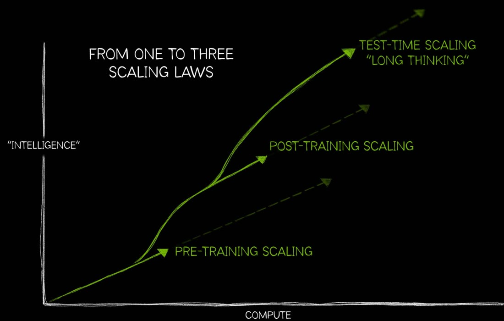
Left: drawn for this course; GPT-4 dates: OpenAI (2023), Wiggers (2025); logo: Wikimedia Commons. Right: Briski (2025).
Outline · Lecture 2 = Topic 5, two sessions of three hours
Three parts answer it tonight; prompting comes next week
Post-training — from a text predictor to an assistant
Prompting — from one call to a loop
History of prompting · chain-of-thought and reasoning models · agents and harnesses · invited talk at 20:10: Zeyu Qin (HKUST)
Part A
Why we need post-training
See what post-training changes, how the field got here, and why it matters.
A · What post-training brings
Base vs Chat Models
Drawn for this course; GPT-4 dates: OpenAI (2023), Wiggers (2025); logo: Wikimedia Commons.
A · What post-training brings
Pre-training teaches next-token prediction on trillions of tokens
- Train on trillions of tokens of text from the web, books, code, and documents
- Models are often trained on 5-50+ trillion tokens
- 1T of text tokens is about 3-5 TB of data
- Labs gather and filter 10-20X more data than is used for the model
- Total data funnel targeted for models is on the order of petabytes
- Objective: predict the next token in each sequence
- Result: Incredible, flexible, useful models
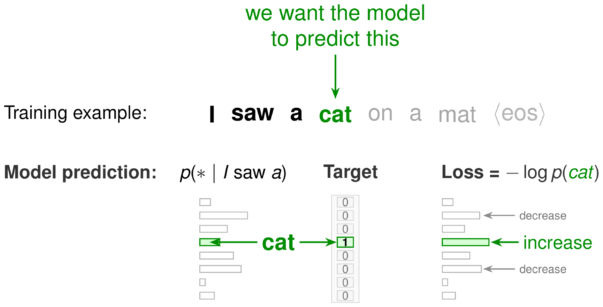
From Lambert (2026c), Lecture 1, p. 13, "Pretraining: Next-token prediction"; figure cropped from the page (300 dpi).
A · What post-training brings
Guess what a model that is only pre-trained writes next
A base model is a model after pre-training only. It predicts the next token of text from the web.
- A"S R Nathan." Then it stops.
- B"S R Nathan," and then more facts about 2006.
- CA full sentence that answers the question.
Prompt adapted from Lambert (2026c), Lecture 1, pp. 14–15 (his prompt asks about the United States).
A · What post-training brings
A base model continues the text instead of answering the question
After pretraining we are left with a glorified autocomplete model, for example:
S R Nathan, the Prime Minister of Singapore in 2006 was Lee Hsien Loong, and the Minister Mentor in 2006 was Lee Kuan Yew…
Adapted from Lambert (2026c), Lecture 1, p. 14, "A base model completes text" (his example: Llama 3.1 405B Base, Grattafiori et al., 2024, on the US president).
A · What post-training brings
Post-training makes the same model answer like a chatbot
The earliest forms of modern post-trained (or RLHF-tuned) models shifted the continuation format to always conforming to the “answering a question style.” An example of what early conversational models looked like is below:
S R Nathan was the President of Singapore in 2006. He served two terms in office, from 1 September 1999 to 31 August 2011.
Adapted from Lambert (2026c), Lecture 1, p. 15, "Post-training makes it answer like a chatbot" (his example: Tülu 3 405B, post-trained from Llama 3.1 405B Base, Lambert et al., 2025, on the US president).
A · What post-training brings
Base model vs chat model
GPT-2 small: Radford et al. (2019). LaMini-GPT-124M: Wu et al. (2024).
A · What post-training brings
What does post-training change?
- Pre-training: teaches the LLM knowledge, language basics, etc.
- Post-training: makes it talk, think and act like a human being
- Instruction tuning / SFT: chat format
- Preference tuning / RLHF: social norms, styles, friendliness
- RLVR: learns to think and act over long runs, to accomplish complicated tasks without being told how
Adapted from Lambert (2026c), Lecture 1, p. 16.
A · What post-training brings
(1) Post-training makes LLMs easy to use
Model responses evolved quickly to have:
- Better format: direct, conversational answers
- Better style: helpful, concise, Markdown, etc.
- Better product: people could actually use it every day
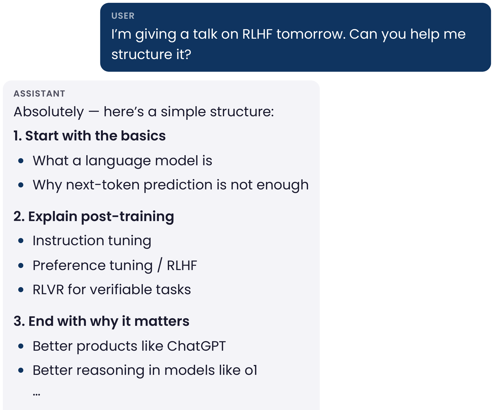
From Lambert (2026c), Lecture 1, p. 18, "ChatGPT was when RLHF made the models even easier to use"; the conversation is cropped from the page (300 dpi).
A · What post-training brings
(2) Post-training makes LLMs obey rules

An explicit constraint is a rule in the prompt, such as "Write your answer in 2 paragraphs or less."
GPT-3 obeys it in about 20% of answers. InstructGPT (GPT-3 after post-training; bars PPO and PPO-ptx) obeys it in about 40%. A few-shot prompt helps GPT-3 only a little.
Reply only in JSON with the keys city and country. Where is Marina Bay Sands?
Ouyang et al. (2022), Fig. 4 (two of four panels), all model sizes together; example rule from §4.1. 20% and 40% are read from the bars. Few-shot prompt: examples of the task in the prompt.
A · What post-training brings
(3) Post-training makes LLMs think to solve hard problems
Data hold the result (the solution), not the trajectory: how a person got to it.
"Think step by step" brings out some reasoning, but it often fails.
The LLM writes its own reasoning; a program checks the answer and rewards the trajectories that succeed.
GPT-4o: LLM · o1-preview: reasoning model
Left: Chen et al. (2024), Fig. 1(a). Middle, right: redrawn from OpenAI (2024) and Muennighoff et al. (2025), Fig. 4(b).
A · What post-training brings
(4) Post-training makes LLMs act in the digital world
- Stronger tool use.
- Able to complete tasks that take longer, without failure or interruption.
Agent: a model that plans and uses tools over many steps. Time horizon: the length of tasks (human working time) it completes in 50% of tries. GPT-2: about 2 s; o3: about 110 min.

Kwa et al. (2025), Fig. 1 (arXiv v4, CC BY 4.0); o3 value from the abstract, GPT-2 value from §3.2. 169 software, security, reasoning and machine-learning tasks.
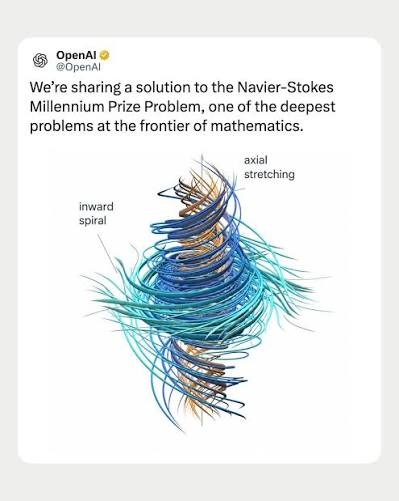
Post by OpenAI on X, 8 Sep 2026; write-up: OpenAI (2026). The Clay Mathematics Institute still lists the problem as active, not solved (CMI, 2026, read 14 Oct 2026).
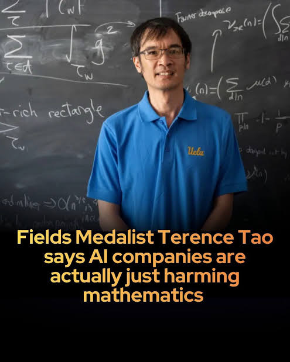
Headline picture shared on social media. Tao's own words, in an interview with IBM Think (Brodsky, 2026, 10 Sep 2026): fast AI answers are "quite concerning", because mathematicians can lose the methods they find on the way.
Part A · 2 of 3
Why we need post-training
Next: History
A · History
2017: the Transformer appears; later language models build on it
- 2017: the Transformer is born

From Lambert (2026c), Lecture 1, p. 4, "2017: The Transformer is born". Figure: Vaswani et al. (2017), Fig. 1.
A · History
2018: GPT-1 and BERT pre-train on text, then fine-tune for each task
- 2017: the Transformer is born
- 2018: GPT-1, ELMo, and BERT released
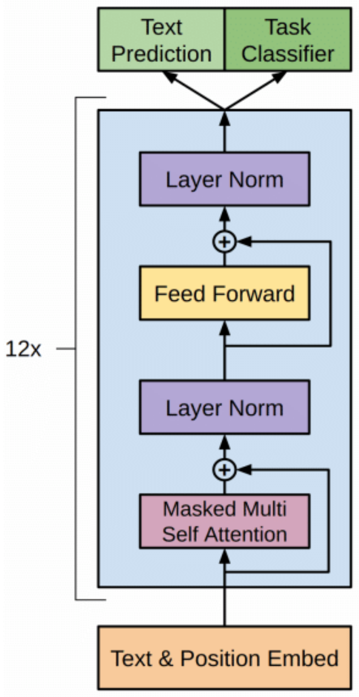
From Lambert (2026c), Lecture 1, p. 5, "2018: GPT-1, ELMo, and BERT"; figure cropped from the page (300 dpi), from Radford et al. (2018), Fig. 1. ELMo: Peters et al. (2018); BERT: Devlin et al. (2019).
A · History
2019: GPT-2; scaling laws show that loss falls steadily with scale
- 2017: the Transformer is born
- 2018: GPT-1, ELMo, and BERT released
- 2019: GPT-2 and scaling laws

From Lambert (2026c), Lecture 1, p. 6, "2019: GPT-2 and scaling laws". Figure: Kaplan et al. (2020), Fig. 1. GPT-2: Radford et al. (2019).
A · History
2020: GPT-3 does new tasks from a few examples in the prompt
- 2017: the Transformer is born
- 2018: GPT-1, ELMo, and BERT released
- 2019: GPT-2 and scaling laws
- 2020: GPT-3’s surprising capabilities

From Lambert (2026c), Lecture 1, p. 7, "2020: GPT-3’s surprising capabilities". Figure: Brown et al. (2020), Fig. 2.1.
A · History
2021: researchers warn about the risks of ever larger language models
- 2017: the Transformer is born
- 2018: GPT-1, ELMo, and BERT released
- 2019: GPT-2 and scaling laws
- 2020: GPT-3’s surprising capabilities
- 2021: Stochastic Parrots
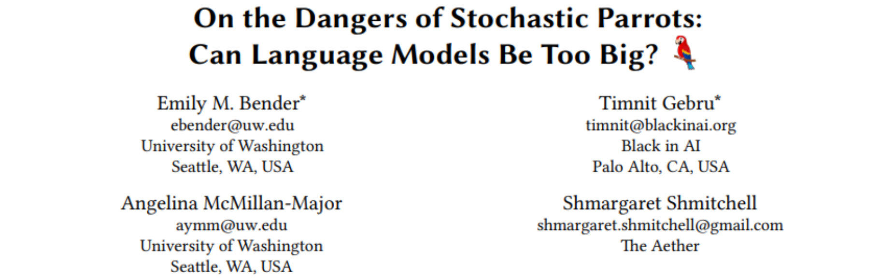
"We provide recommendations including …, investing resources into curating and carefully documenting datasets rather than ingesting everything on the web, carrying out pre-development exercises evaluating how the planned approach fits into research and development goals and supports stakeholder values, …"
From Lambert (2026c), Lecture 1, p. 8, "2021: Stochastic Parrots"; title and authors cropped from the page (300 dpi). Quote: Bender et al. (2021), abstract; bold added.
A · History
2022: ChatGPT, a model trained with human feedback, is released
- 2017: the Transformer is born
- 2018: GPT-1, ELMo, and BERT released
- 2019: GPT-2 and scaling laws
- 2020: GPT-3’s surprising capabilities
- 2021: Stochastic Parrots
- 2022: ChatGPT
From Lambert (2026c), Lecture 1, p. 9, "2022: ChatGPT"; image cropped from the page (300 dpi). ChatGPT: OpenAI (2022).
A · History
2023: GPT-4 reaches frontier scale; OpenAI does not publish its size
- 2017: the Transformer is born
- 2018: GPT-1, ELMo, and BERT released
- 2019: GPT-2 and scaling laws
- 2020: GPT-3’s surprising capabilities
- 2021: Stochastic Parrots
- 2022: ChatGPT
- 2023: GPT-4 and frontier-scale
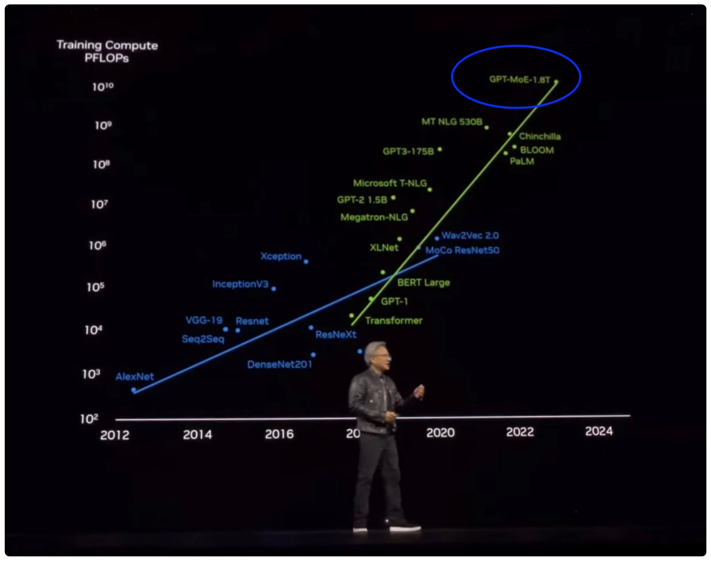
From Lambert (2026c), Lecture 1, p. 10, "2023: GPT-4 and frontier-scale"; image cropped from the page (300 dpi). GPT-4: OpenAI (2023), which gives no model size.
A · History
2024: o1 solves more contest math problems when it thinks longer
- 2017: the Transformer is born
- 2018: GPT-1, ELMo, and BERT released
- 2019: GPT-2 and scaling laws
- 2020: GPT-3’s surprising capabilities
- 2021: Stochastic Parrots
- 2022: ChatGPT
- 2023: GPT-4 and frontier-scale
- 2024: o1 and reasoning models

From Lambert (2026c), Lecture 1, p. 11, "2024: o1 and reasoning models". Figure: OpenAI (2024), first figure, right panel.
A · History
2025: language models act as agents, as in o3 and Claude Code
- 2017: the Transformer is born
- 2018: GPT-1, ELMo, and BERT released
- 2019: GPT-2 and scaling laws
- 2020: GPT-3’s surprising capabilities
- 2021: Stochastic Parrots
- 2022: ChatGPT
- 2023: GPT-4 and frontier-scale
- 2024: o1 and reasoning models
- 2025: o3, Claude Code, and agents
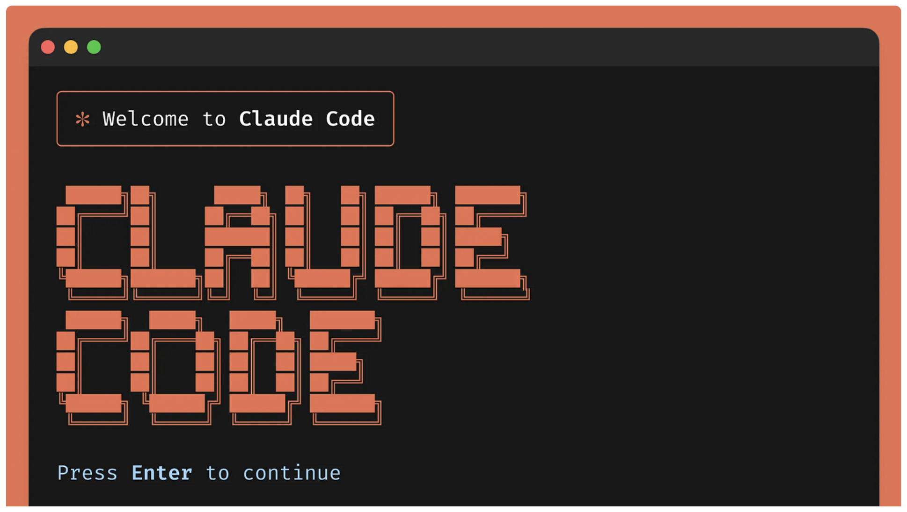
From Lambert (2026c), Lecture 1, p. 12, "2025: o3, Claude Code, and agents"; image cropped from the page (300 dpi). Claude Code: Anthropic (2025); o3: OpenAI (2025); agents: OpenAI (2025).
A · History
People started to do post-training earlier, before ChatGPT
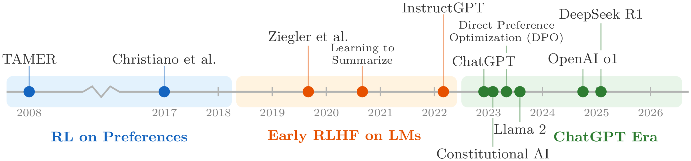
From Lambert (2026c), Lecture 1, p. 29, "The path to modern RLHF", first part: the timeline, cropped from the page (300 dpi).
A · History
Six milestones of post-training
- Ziegler 2019 (Ziegler et al., 2019) — first RLHF on language models
- InstructGPT (Ouyang et al., 2022) — the canonical RLHF recipe behind ChatGPT
- Constitutional AI (Bai et al., 2022) — Introduced early methods for AI feedback in Claude
- DPO (Rafailov et al., 2023) — direct preference optimization (DPO) without a reward model
- Llama 3 (Grattafiori et al., 2024) and Tülu 3 (Lambert et al., 2025) — modern multi-stage recipes
- DeepSeek R1 (Guo et al., 2025) — popularized RLVR
From Lambert (2026c), Lecture 1, p. 29, "The path to modern RLHF", second part: the list under the timeline.
A · History
Early days: InstructGPT/RLHF (2022)
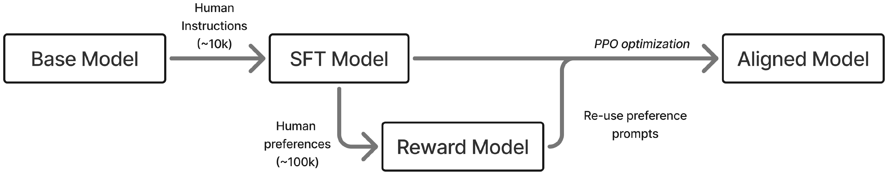
Early on, RLHF had a well-documented, simple enough approach.
- InstructGPT made the classic three-stage recipe canonical: SFT, reward modeling, then RL against the reward model. OpenAI even hinted that the original ChatGPT used this!
- This became the intellectual template for much of modern post-training.
From Lambert (2026c), Lecture 1, p. 45, "The early days: InstructGPT"; diagram cropped from the page (300 dpi). InstructGPT: Ouyang et al. (2022).
A · History
Now: More rounds, less human data
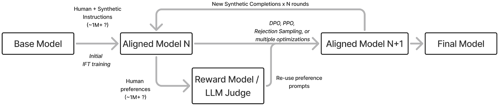
What began as an “RLHF” recipe evolved into a complex series of steps to get the final, best model (e.g. Nemotron 4 340B, Llama 3.1).
- Modern systems keep the same core idea of using multiple optimizers with different strengths and weaknesses, but add more stages, more data, and more filtering.
- This trend has only continued, and recipes ebb and flow, as tools like RLVR and model merging change the scope of what is doable in different ways.
From Lambert (2026c), Lecture 1, p. 46, "From RLHF to post-training"; diagram cropped from the page (300 dpi). Llama 3.1: Grattafiori et al. (2024).
A · History
Since ChatGPT, the focus of open post-training changed every year
As time has passed since ChatGPT, the field has gone through multiple distinct phases (roughly):
- 2023: Simple SFT for better chatbots and reproducing RLHF fundamentals (Alpaca, Vicuna, etc.)
- 2024: DPO dominates open models and training stages expand (Zephyr-beta, Tülu 2, etc.)
- 2025: RLVR, complex recipes (Tülu 3, Olmo 3, Nemotron 3, R1, etc.)
- 2026: Agentic training, multi-turn RL, etc.
Within 2024 the field shifted its focus to post-training, as training stages evolved beyond the InstructGPT-style recipe, DPO proliferated, and largely RLHF was viewed as one tool (that you may not even need).
From Lambert (2026c), Lecture 1, p. 48, “From RLHF to ‘post-training’” (p. 47 is the same page without the last paragraph).
Part A · 3 of 3
Why we need post-training
Next: Why it matters
A · Why it matters
An early view: post-training changes only the style of the answers
RLHF’s reputation was that its contributions are minor on the final language models.
“A model’s knowledge and capabilities are learnt almost entirely during pretraining, while alignment teaches it which subdistribution of formats should be used when interacting with users.”
LIMA: Less Is More for Alignment (2023)
From Lambert (2026c), Lecture 1, p. 49, “‘Just style transfer’” (the left half of p. 50). Quote: Zhou et al. (2023).
A · Why it matters
Base models hold more ability than early post-training could expose
Sometimes this view of alignment (or RLHF) teaching “format” made people think that post-training only made minor changes to the model. This would describe finetuning as “just style transfer.”
The base model trained on trillions of tokens of web text has seen and learned from an extremely broad set of examples. The model at this stage contains far more latent capability than early post-training recipes were able to expose.
The question is: How does post-training interact with these?
From Lambert (2026c), Lecture 1, p. 50, “‘Just style transfer’”, right half (its left half is the slide before).
A · Why it matters
Does it matter to model vendors?
How much it matters? A computation view
What percent of training compute went to post-training, compared with pre-training?
- A1%
- B10%
- C20%
Note: pre-training alone takes weeks to months on thousands of GPUs. GPT-3 (2020): about 34 days on 1,024 A100 GPUs (an estimate). DeepSeek-V3 (2024): about 54 days on 2,048 H800 GPUs.
GPT-3: estimate in Narayanan et al. (2021), §5.1 (300 billion tokens at 140 teraFLOP/s per GPU). DeepSeek-V3: DeepSeek-AI (2024), §1: 2,664K H800 GPU hours, "less than two months"; 2,664K / 2,048 GPUs ≈ 54 days (computed).
A · Why it matters
Most computation is spent on pre-training!
Answer: A, about 1%. InstructGPT: 60 / 3,640 ≈ 1.6%. With large-scale RL, DeepSeek-R1 used 5.5%, still under 10%.
Bars to scale. Ouyang et al. (2022), §5.1; DeepSeek-AI (2024), Table 1; R1: Guo et al. (2025), arXiv v2, Table 7 (R1-Zero 101K, SFT data 5K, R1 41K). Shares of pre-training computed.
A · Why it matters
Why post-training matters?View 1: Post-training helps more than scaling
Y-axis: how often people preferred a model's answer to the answer of the 175B SFT model.
People preferred 1.3B InstructGPT (PPO-ptx) to 175B GPT-3, a model with about 135 times more parameters.
The authors: RLHF helped users more than a 100 times larger model.

Ouyang et al. (2022), Fig. 1, §1 and §5.1. 175 / 1.3 ≈ 135 (computed). Same architecture; the only difference is fine-tuning on human data.
A · Why it matters
Why post-training matters?View 2: The base model sets the ceiling; post-training's job is to reach it
RLHF’s reputation was that its contributions are minor on the final language models.
An example, OLMoE — same base model family, updated only post-training:
OLMoE-1B-7B-0924-Instruct(Sep. 2024): 38.44 avg. eval scoreOLMoE-1B-7B-0125-Instruct(Jan. 2025): 45.62 avg. eval score
Base models determine the ceiling. Post-training’s job has been to reach it.
Simple post-training often doesn’t extract nearly enough performance (especially when the pace of progress is high).
From Lambert (2026c), Lecture 1, p. 51, "An intuition for post-training". OLMoE: Muennighoff et al. (2025); OLMoE Team (2025). ⚠ The model cards (Allen Institute for AI, 2025) say the Jan. 2025 base model also used a new data mix in its last 100B tokens.
A · Why it matters
Post-training draws out what the base model already knows
“The superficial alignment hypothesis (SAH) posits that large language models learn most of their knowledge during pre-training, and that post-training merely surfaces this knowledge.”
Operationalising the Superficial Alignment Hypothesis via Task Complexity (2026)
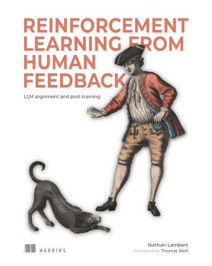
Nathan Lambert
author of the RLHF Book (rlhfbook.com)
The second paper, 3 years later, matches my intuition for post-training.
I [Nathan Lambert] call this the Elicitation Theory of post-training, where we’re trying to pull out the most useful knowledge of the model.
Pretraining builds a chassis for the car -- post-training is the hard craft of extracting the most performance from it.
From Lambert (2026c), Lecture 1, pp. 52–53. Quote: Vergara-Browne et al. (2026). Photo: natolambert.com; cover: Lambert (2026d), Manning edition.
A · Why it matters
Why post-training matters?View 3: Post-training unlocks test-time scaling and agents
RL with checkable answers (slide 16) has no learned reward model to fool. So labs can keep adding RL compute.
- o1: accuracy keeps rising as RL training compute grows.
- Olmo 3.1, an open 32B model: still improving after 28 days of RL on 224 GPUs.

Figure: OpenAI (2024), first figure, left panel, as in Lambert (2026c), Lecture 1, p. 59. Olmo 3.1: Lambert (2026c), p. 62; Team Olmo (2025).
A · Why it matters
RL unlocks test-time scaling and agents

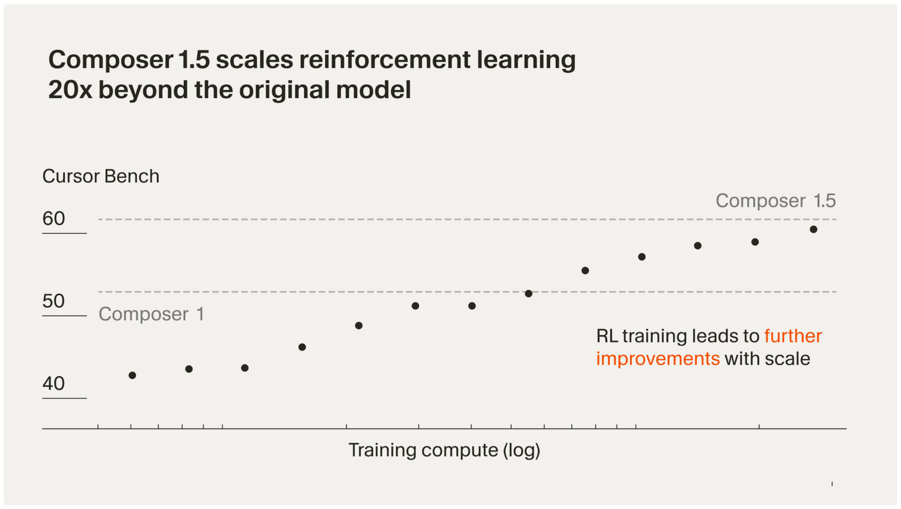
Left: Guo et al. (2025), arXiv v2, Fig. 1, as in Lambert (2026c), Lecture 1, p. 61. Right: cropped from Lambert (2026c), p. 60, from Cursor Team (2026).
A · Why it matters
Post-training is changing fast, toward tools and coding agents
Post-training and RLHF are changing faster than maybe ever before.
- Language models are becoming “tool-use native” and are now about tools, harnesses (how you tell the model to use said tools), and much more than just weights
- RLHF and human preferences haven’t gone away, but are evolving far more slowly and out of the central gaze of the industry
- Building language models and doing research is changing rapidly with coding agents
From Lambert (2026c), Lecture 1, p. 63, "Where this leaves us".
Part A — why we need post-training · summary
Why do we need post-training?
- What post-training brings: a chat model that answers, not one that only continues text; instruction following; reasoning; agents.
- History: (1) 2022: ChatGPT, trained with RLHF; (2) 2024: o1 and reasoning models; (3) 2025: agents, such as Claude Code.
- Why it matters: (1) it helps more than scaling; (2) the base model sets the ceiling, and post-training reaches it; (3) RL lets post-training scale.
Coming up in Part B: how to post-train a model — instruction tuning, learning from human preferences, RLHF, DPO and GRPO.
Part B
How to do post-training
From copying good answers to learning which answer is better.
Part B · a map of the methods
Each method in Part B fixes a problem of the one before
Copy good answers: the next-token loss, on the answer only.
→ follows instructions
People compare answers; a reward model learns their choices; RL (PPO) raises the reward.
→ answers that people prefer
InstructGPT and ChatGPT: SFT, then RLHF.
One simple loss on each pair of answers.
→ no reward model, no RL loop
The mean reward of a group of answers is the baseline.
→ no value model
Ours: a map of this part. The two problems in red are titles of this part's slides on Yang (2026), CS224N, pp. 24, 51 and 53, and on the four models of RLHF.
Part B · 1 of 6
How to do post-training
Next: Instruction tuning
B · Instruction tuning
Language modeling ≠ assisting users
PROMPT
Explain the moon landing to a 6 year old in a few sentences.
COMPLETION
GPT-3
Explain the theory of gravity to a 6 year old.
Explain the theory of relativity to a 6 year old in a few sentences.
Explain the big bang theory to a 6 year old.
Explain evolution to a 6 year old.
Language models are not aligned with user intent [Ouyang et al., 2022]
Finetuning to the rescue!
From Yang (2026), CS224N, p. 8. The page's screenshot is rebuilt as text.
B · Instruction tuning
Language modeling ≠ assisting users
PROMPT
Explain the moon landing to a 6 year old in a few sentences.
COMPLETION
Human
A giant rocket ship blasted off from Earth carrying
astronauts to the moon. The astronauts landed their
spaceship on the moon and walked around exploring the
lunar surface. Then they returned safely back to Earth,
bringing home moon rocks to show everyone.
Language models are not aligned with user intent [Ouyang et al., 2022]
Finetuning to the rescue!
From Yang (2026), CS224N, p. 9. The page's screenshot is rebuilt as text.
B · Instruction tuning
The pretraining/finetuning paradigm
Pretraining can improve NLP applications by serving as parameter initialization.
Step 1: Pretrain (on language modeling)
Lots of text; learn general things!
Step 2: Finetune (on your task)
Not many labels; adapt to the task!
From Yang (2026), CS224N, p. 10. Diagram redrawn.
B · Instruction tuning
Scaling up finetuning
Pretraining can improve NLP applications by serving as parameter initialization.
Step 1: Pretrain (on language modeling)
Lots of text; learn general things!
Step 2: Finetune (on many tasks)
Not many labels; adapt to the tasks!
From Yang (2026), CS224N, p. 11. Diagram redrawn.
B · Instruction tuning
Instruction finetuning
- Collect examples of (instruction, output) pairs across many tasks and finetune an LM
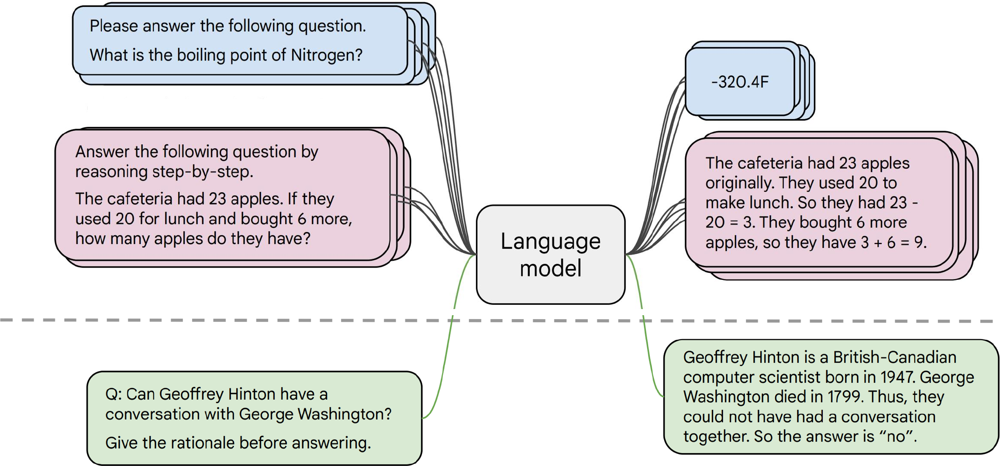
- Evaluate on unseen tasks
[FLAN-T5; Chung et al., 2022]
From Yang (2026), CS224N, p. 12. Figure: Chung et al. (2022), Fig. 1, as cropped on that page. Right panel (ours): Chung et al. (2022), Fig. 2, Fig. 17, §2.3.
B · Instruction tuning
Instruction finetuning and performance gains
Model input (Disambiguation QA)
Q: In the following sentences, explain the
antecedent of the pronoun (which thing the
pronoun refers to), or state that it is ambiguous.
Sentence: The reporter and the chef will discuss
their favorite dishes.
Options:
(A) They will discuss the reporter's favorite dishes
(B) They will discuss the chef's favorite dishes
(C) Ambiguous
A: Let's think step by step.
Before instruction finetuning
The reporter and the chef will discuss their favorite
dishes.
The reporter and the chef will discuss the reporter's
favorite dishes.
The reporter and the chef will discuss the chef's
favorite dishes.
The reporter and the chef will discuss the reporter's
and the chef's favorite dishes.
(doesn’t answer question)
From Yang (2026), CS224N, p. 19. Example: Chung et al. (2022), Fig. 7 (Disambiguation QA, a BIG-Bench task); the output is from PaLM 540B.
B · Instruction tuning
Instruction finetuning and performance gains
Model input (Disambiguation QA)
Q: In the following sentences, explain the
antecedent of the pronoun (which thing the
pronoun refers to), or state that it is ambiguous.
Sentence: The reporter and the chef will discuss
their favorite dishes.
Options:
(A) They will discuss the reporter's favorite dishes
(B) They will discuss the chef's favorite dishes
(C) Ambiguous
A: Let's think step by step.
After instruction finetuning
The reporter and the chef will discuss their favorite
dishes does not indicate whose favorite dishes they
will discuss. So, the answer is (C).
Try FLAN-T5 out to get a sense of its capabilities: https://huggingface.co/google/flan-t5-xxl[Chung et al., 2022]
From Yang (2026), CS224N, p. 20. Example: Chung et al. (2022), Fig. 7; the output is from Flan-PaLM 540B.
B · Instruction tuning
Tuning on 1,000 chosen examples beat tuning on 52,000
- You don’t need many samples to instruction tune (e.g., “LIMA: Less Is More for Alignment” Zhou et al., 2023)


From Yang (2026), CS224N, p. 22, second half. Figures: Zhou et al. (2023), Table 1 (training rows) and Fig. 1.
B · Instruction tuning: the math
Instruction tuning trains only on the response tokens
- SFT (supervised fine-tuning) is another name for instruction tuning. One example is a prompt \(x = (x_1, \dots, x_m)\) and a response \(y = (y_1, \dots, y_n)\). Join them into one sequence \(s\) of length \(m + n\).
- The chain rule, as in Lecture 1: \[ \log p_\theta(s) = \sum_{t=1}^{m}\log p_\theta(x_t\mid x_{<t}) + \sum_{j=1}^{n}\log p_\theta(y_j\mid x, y_{<j}) = \log p_\theta(x) + \log p_\theta(y\mid x). \]
- We want the model to write \(y\) for a given \(x\), not to write prompts. So we drop the first sum: \[ \mathcal{L}_{\mathrm{SFT}}(\theta) = -\,\mathbb{E}_{(x,y)\sim\mathcal{D}}\Big[\sum_{j=1}^{n}\log p_\theta(y_j\mid x, y_{<j})\Big]. \]
Lecture page of this session, SFT derivation, steps 1–3. Llama 3 trains with "a standard cross entropy loss on the target tokens (while masking loss on prompt tokens)" (Grattafiori et al., 2024, §4.1.3).
B · Instruction tuning: the math
The loss mask is 0 on prompt tokens and 1 on response tokens
\(m_t = 0\) on prompt tokens, \(m_t = 1\) on response tokens: \[ \mathcal{L}_{\mathrm{SFT}}(\theta) = -\frac{\sum_t m_t \log p_\theta(s_t\mid s_{<t})}{\sum_t m_t}. \]
What if we also mask the final <end>? Answer, then press.
Lecture page of this session, SFT derivation, steps 4–5. Interactive: toy tokens and random per-token losses, not a model's; the loss is computed in the browser. The completions on the right are toy text, not a model's output.
Part B · 2 of 6
How to do post-training
Next: RLHF
B · RLHF
Writing correct answers for every task is expensive
- One limitation of instruction finetuning is obvious: it’s expensive to collect ground-truth data for tasks.
- But there are other, subtler limitations too. Can you think of any?
From Yang (2026), CS224N, p. 24, first two points (the page is split over two slides).
B · RLHF
Limitation of instruction tuning


Both images were generated with ChatGPT (OpenAI) on 13 Oct 2026 for this slide, in an xkcd-like stick-figure style.
B · RLHF
The language-model loss does not match human preferences
- Problem 1: tasks like open-ended creative generation have no right answer.
- Write me a story about a dog and her pet grasshopper.
- Problem 2: language modeling penalizes all token-level mistakes equally, but some errors are worse than others.
- Even with instruction finetuning, there a mismatch between the LM objective and the objective of “satisfy human preferences”!
- Can we explicitly attempt to satisfy human preferences?
From Yang (2026), CS224N, p. 24, the rest of the page. Diagram redrawn.
B · RLHF
Optimize for human preferences
What is human preference?
Task: Summarize the paragraph into one sentence.
SAN FRANCISCO, 20 July 2007 — At 4:42 a.m. on Friday, an earthquake of magnitude 4.2 shook the San Francisco Bay Area. Its center was about two miles east-northeast of Oakland, 3.6 miles below the surface. The shaking lasted about 50 seconds and set off alarms in homes. About 2,000 customers lost electric power. The police got many calls from worried people, but nobody reported an injury or damage. The U.S. Geological Survey calls a quake of this size “light”: people feel it indoors, and it can break dishes and windows and knock over unstable objects.
\(s_1\):
An earthquake hit San Francisco. There was minor property damage, but no injuries.
\(s_2\):
The Bay Area has good weather but is prone to earthquakes and wildfires.
Which is the CORRECT answer?
Paragraph: the facts of CNN (2007), in our words. Summaries \(s_1\), \(s_2\): Yang (2026), CS224N, p. 25.
B · RLHF
Optimize for human preferences
What is human preference?
Task: Summarize the paragraph into one sentence.
SAN FRANCISCO, 20 July 2007 — At 4:42 a.m. on Friday, an earthquake of magnitude 4.2 shook the San Francisco Bay Area. Its center was about two miles east-northeast of Oakland, 3.6 miles below the surface. The shaking lasted about 50 seconds and set off alarms in homes. About 2,000 customers lost electric power. The police got many calls from worried people, but nobody reported an injury or damage. The U.S. Geological Survey calls a quake of this size “light”: people feel it indoors, and it can break dishes and windows and knock over unstable objects.
\(s_1\):
An earthquake hit San Francisco. There was minor property damage, but no injuries.
Your score: ____ / 10
\(s_2\):
The Bay Area has good weather but is prone to earthquakes and wildfires.
Your score: ____ / 10
Which is the BETTER answer? Please rate them in the range [0, 10].
Paragraph: the facts of CNN (2007), in our words. Summaries \(s_1\), \(s_2\): Yang (2026), CS224N, p. 25.
B · RLHF
Poll: rate three summaries on your phone
Task: Summarize the paragraph into one sentence.
SAN FRANCISCO, 20 July 2007 — At 4:42 a.m. on Friday, an earthquake of magnitude 4.2 shook the San Francisco Bay Area. Its center was about two miles east-northeast of Oakland, 3.6 miles below the surface. The shaking lasted about 50 seconds and set off alarms in homes. About 2,000 customers lost electric power. The police got many calls from worried people, but nobody reported an injury or damage. The U.S. Geological Survey calls a quake of this size “light”: people feel it indoors, and it can break dishes and windows and knock over unstable objects.
costa-nus.github.io/classroom-poll
Type the class key. Rate each of the three summaries from 0 to 10.
Paragraph: the facts of CNN (2007), in our words. The poll is anonymous: no names are stored.
B · RLHF
Optimizing for human preferences by Reinforcement Learning
- Let’s say we were training a language model on some task (e.g. summarization).
- For each LM sample \(s\), imagine we had a way to obtain a human reward of that summary: \(R(s) \in \mathbb{R}\), higher is better.
SAN FRANCISCO,
California (CNN) --
A magnitude 4.2
earthquake shook the
San Francisco
...
overturn unstable
objects.
An earthquake hit
San Francisco.
There was minor
property damage,
but no injuries.
\(s_1\)
\(R(s_1) = 8.0\)
The Bay Area has
good weather but is
prone to
earthquakes and
wildfires.
\(s_2\)
\(R(s_2) = 1.2\)
- Now we want to maximize the expected reward of samples from our LM:
\(\displaystyle\max_\theta\; \mathbb{E}_{\hat s\sim p_\theta(s)}\big[R(\hat s)\big]\)
Note: for simplicity, we show the math
for a single prompt. In practice, we
average over many prompts
From Yang (2026), CS224N, p. 25.
B · RLHF
Reinforcement learning to the rescue
- The field of reinforcement learning (RL) has studied these (and related) problems for many years now [Williams, 1992; Sutton and Barto, 1998]
- Circa 2013: resurgence of interest in RL applied to deep learning, game-playing [Mnih et al., 2013]
- But the interest in applying RL to modern LMs is an even newer phenomenon [Ziegler et al., 2019; Stiennon et al., 2020; Ouyang et al., 2022]. Why?
- RL w/ LMs has commonly been viewed as very hard to get right (still is!)
- Newer advances in RL algorithms that work for large neural models, including language models (e.g. PPO; [Schulman et al., 2017])
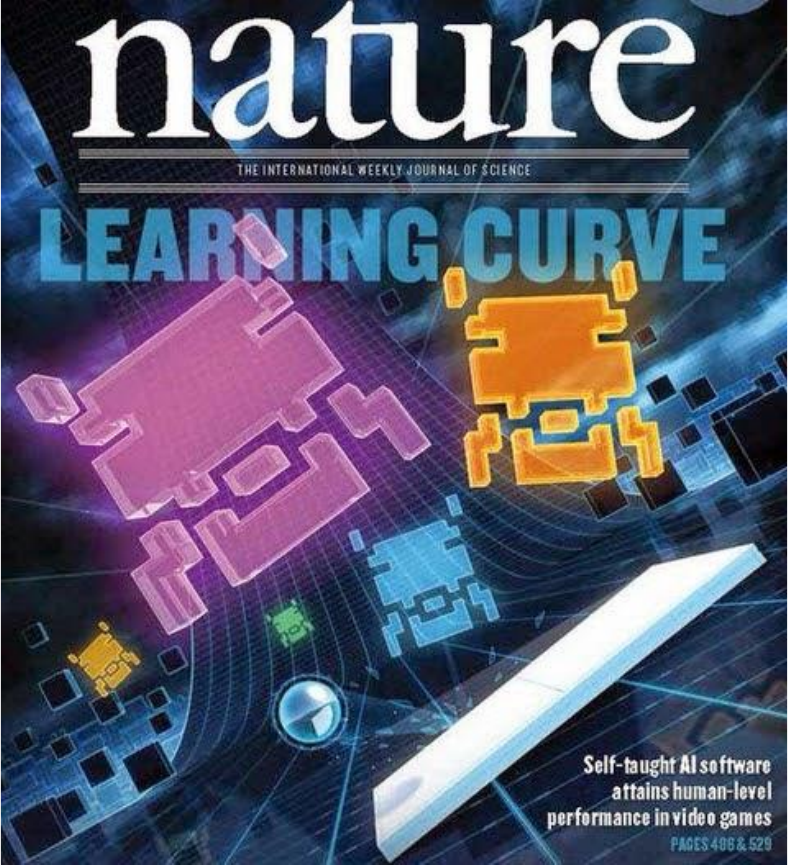
From Yang (2026), CS224N, p. 26. The Nature cover and the AlphaGo logo are cropped from the page.
B · RLHF
Optimizing for human preferences
- How do we actually change our LM parameters \(\theta\) to maximize this?
\(\mathbb{E}_{\hat s\sim p_\theta(s)}\big[R(\hat s)\big]\)
- Let’s try doing gradient ascent!
How do we estimate
this expectation??
What if our reward
function is non-
differentiable??
- Policy gradient methods in RL (e.g., REINFORCE; [Williams, 1992]) give us tools for estimating and optimizing this objective.
From Yang (2026), CS224N, p. 27.
B · RLHF
A (very!) brief introduction to policy gradient/REINFORCE [Williams, 1992]
- We want to obtain
\(\displaystyle \nabla_\theta\,\mathbb{E}_{\hat s\sim p_\theta(s)}\big[R(\hat s)\big] = \overset{\mathclap{\textstyle\small\textcolor{#6b3d7a}{\textsf{(defn.\ of expectation)}}}}{\nabla_\theta\,\colorbox{#f4cccc}{$\displaystyle\sum_s$}\,R(s)\colorbox{#f4cccc}{$\displaystyle p_\theta(s)\vphantom{\sum_s}$}} = \overset{\mathclap{\textstyle\small\textcolor{#6b3d7a}{\textsf{(linearity of gradient)}}}}{\displaystyle\sum_s R(s)\;\colorbox{#fdf08a}{$\nabla_\theta p_\theta(s)$}}\)
- Here we’ll use a very handy trick known as the log-derivative trick. Let’s try taking the gradient of \(\log p_\theta(s)\)
\(\displaystyle \underset{\mathclap{\textstyle\small\textcolor{#6b3d7a}{\textsf{(chain rule)}}}}{\nabla_\theta \log p_\theta(s) = \frac{1}{p_\theta(s)}\,\nabla_\theta\, p_\theta(s)} \qquad\Longrightarrow\qquad \colorbox{#fdf08a}{$\nabla_\theta\, p_\theta(s)$} = p_\theta(s)\;\nabla_\theta \log p_\theta(s)\)
- Plug back in:
\(\displaystyle \sum_s R(s)\,\colorbox{#fdf08a}{$\nabla_\theta p_\theta(s)$} = \overset{\mathclap{\textstyle\small\textcolor{#b0302a}{\begin{array}{c}\textsf{This is an}\\ \textsf{expectation}\end{array}}}}{\colorbox{#f4cccc}{$\displaystyle\sum_s p_\theta(s)$}}\!\overset{\mathclap{\textstyle\small\textcolor{#2e7d4f}{\textsf{of this}}}}{\colorbox{#d9ead3}{$\displaystyle R(s)\,\nabla_\theta \log p_\theta(s)\vphantom{\sum_s}$}}\)
From Yang (2026), CS224N, p. 28.
B · RLHF
A (very!) brief introduction to policy gradient/REINFORCE [Williams, 1992]
- Now we have put the gradient “inside” the expectation, we can approximate this objective with Monte Carlo samples:
\(\displaystyle \nabla_\theta\,\mathbb{E}_{\hat s\sim p_\theta(s)}\big[R(\hat s)\big] = \mathbb{E}_{\hat s\sim p_\theta(s)}\big[R(\hat s)\,\nabla_\theta \log p_\theta(\hat s)\big] \approx \frac{1}{m}\sum_{i=1}^{m} R(s_i)\,\nabla_\theta \log p_\theta(s_i)\)
This is why it’s called “reinforcement
learning”: we reinforce good actions,
increasing the chance they happen again.
- Giving us the update rule:
This is heavily simplified! There is a lot
more needed to do RL w/ LMs. Can you
see any problems with this objective?
If \(R\) is +++
Take gradient steps
to maximize \(p_\theta(s_i)\)
If \(R\) is ---
Take steps to
minimize \(p_\theta(s_i)\)
From Yang (2026), CS224N, p. 29.
B · RLHF
Introducing Proximal Policy Optimization (PPO)
- Problems with vanilla REINFORCE: high variance in gradient estimates; unstable training; sample inefficiency;
- Key idea of PPO: limit how much the policy can change in each update
- PPO (clipped) objective:
\(r_t(\theta) = \frac{p_\theta(s_i)}{p^\theta_{old}(s_i)}\) is the probability ratio
clip range (e.g., 0.2)
\(L^{CLIP}(\theta) = \;\mathbb{E}_{s_i\sim p^\theta_{old}(s)}\big[\min\big(r_t(\theta)\cdot A(s_i),\, \mathrm{clip}\,(r_t(\theta), 1-\epsilon, 1+\epsilon)\cdot A(s_i)\big)\big]\)\(A(s_i)\) is the advantage, i.e., how much better than expected)
Where the reward goes (added): \(A(s_i) = R(s_i) - b\), the reward of the sample minus the reward we expect, \(b\) (a value model predicts it). \(L^{CLIP}\) raises \(p_\theta(s_i)\) when \(A(s_i) > 0\) and lowers it when \(A(s_i) < 0\), as REINFORCE did with \(R(s_i)\).
- Update rule: \(\theta_{t+1} := \theta_t + \alpha\nabla_{\theta_t} L^{CLIP}(\theta_t)\)
For details on algorithm, check out https://web.stanford.edu/class/cs234/slides/lecture6post.pdf
From Yang (2026), CS224N, p. 30. \(L^{CLIP}\): Schulman et al. (2017), eq. 7. The line "Where the reward goes" is ours.
B · RLHF
How do we model human preferences?
- So far, we assume we have a mapping from \(s\) to its human reward \(R(s)\), where we assume there is a human to tell how good it is, and we maximize the expected reward of samples: \[\max_\theta\; \mathbb{E}_{\hat s\sim p_\theta(s)}\big[R(\hat s)\big]\]
- But, it is not so fast (why not?)
Ours (13 Oct 2026), before CS224N p. 31. The summaries and the rewards 8.0 and 1.2 are from Yang (2026), CS224N, p. 25.
B · RLHF
How do we model human preferences?
- Awesome: now for any arbitrary, non-differentiable reward function \(R(s)\), we can train our language model to maximize expected reward.
- Not so fast! (Why not?)
- Problem 1: human-in-the-loop is expensive!
- Solution: instead of directly asking humans for preferences, model their preferences as a separate (NLP) problem! [Knox and Stone, 2009]
An earthquake hit
San Francisco.
There was minor
property damage,
but no injuries.
\(s_1\)
\(R(s_1) = 8.0\)
The Bay Area has
good weather but is
prone to
earthquakes and
wildfires.
\(s_2\)
\(R(s_2) = 1.2\)
Train an LM \(RM_\phi(s)\) to predict human preferences from an annotated dataset, then optimize for \(RM_\phi\) instead.
Least squares: \(\min_\phi\; J_{RM}(\phi) = \mathbb{E}_{(s,\,R(s))\sim D}\big[\big(RM_\phi(s) - R(s)\big)^2\big]\)
From Yang (2026), CS224N, p. 31. The page's person and banknote icons are redrawn. The least-squares objective is ours, in the symbols of p. 33 (slide 78).
B · RLHF
How do we model human preferences?
- Problem 2: human judgments are noisy and miscalibrated!
- Solution: instead of asking for direct ratings, ask for pairwise comparisons, which can be more reliable [Phelps et al., 2015; Clark et al., 2018]
A 4.2 magnitude
earthquake hit
San Francisco,
resulting in
massive damage.
\(s_3\)
\(R(s_3) = \quad 4.1? \quad 6.6? \quad 3.2?\)
From Yang (2026), CS224N, p. 32.
B · RLHF
How do we model human preferences?
Problem 2: human judgments are noisy and miscalibrated!
Poll 2
costa-nus.github.io/classroom-poll
Same page and key as poll 1. Pick the better summary in each pair.
From Yang (2026), CS224N, p. 32.
B · RLHF
How do we model human preferences?
- Problem 2: human judgments are noisy and miscalibrated!
- Solution: instead of asking for direct ratings, ask for pairwise comparisons, which can be more reliable [Phelps et al., 2015; Clark et al., 2018]
An earthquake hit
San Francisco.
There was minor
property damage,
but no injuries.
\(s_1\)
A 4.2 magnitude
earthquake hit
San Francisco,
resulting in
massive damage.
\(s_3\)
The Bay Area has
good weather but is
prone to
earthquakes and
wildfires.
\(s_2\)
Bradley-Terry [1952] paired comparison model
\(\min_\phi\; J_{RM}(\phi) = -\mathbb{E}_{(\textcolor{#1e9a4b}{s^w},\textcolor{#b0302a}{s^l})\sim D}\big[\log\sigma\big(RM_\phi(\textcolor{#1e9a4b}{s^w}) - RM_\phi(\textcolor{#b0302a}{s^l})\big)\big]\)“winning”
sample
“losing”
sample
\(\textcolor{#1e9a4b}{s^w}\) should score
higher than \(\textcolor{#b0302a}{s^l}\)
From Yang (2026), CS224N, p. 33. Reward-model diagram redrawn.
B · RLHF: the math
The reward model learns from score differences only
- Assume each response has a score \(r(x, y)\) (Bradley & Terry, 1952): \[ P(y_w \succ y_l \mid x) = \frac{e^{r(x,y_w)}}{e^{r(x,y_w)} + e^{r(x,y_l)}} \]
- Divide the top and the bottom by \(e^{r(x,y_w)}\): \[ P(y_w \succ y_l \mid x) = \frac{1}{1 + e^{-(r(x,y_w) - r(x,y_l))}} = \sigma\big(r(x,y_w) - r(x,y_l)\big) \]
- Maximum likelihood: \(\;\mathcal{L}_{\mathrm{RM}}(\phi) = -\,\mathbb{E}_{(x, y_w, y_l)}\big[\log\sigma\big(r_\phi(x,y_w) - r_\phi(x,y_l)\big)\big]\).
- Add the same \(c(x)\) to every score: the difference, and so the loss, do not change. Only differences are learned.
Lecture page of this session, reward-model derivation. InstructGPT's loss (eq. 1) is the same with a factor \(1/\binom{K}{2}\) (Ouyang et al., 2022, §3.5).
B · RLHF: the math
Check-in: from two scores to a probability
The reward model scores two answers to one prompt \(x\): \(r_A = r(x, A) = 2.1\) and \(r_B = r(x, B) = 1.4\).
From the previous slide: \(P(A \succ B) = \sigma(r_A - r_B)\), with \(\sigma(z) = \dfrac{1}{1 + e^{-z}}\).
1. What is \(P(A \succ B)\)?
2. Now add 100 to both scores: \(r_A = 102.1\), \(r_B = 101.4\). What happens to \(P(A \succ B)\)?
- It goes up, toward 1.
- It goes down, toward 0.5.
- It does not change.
- It depends on how large the scores are.
Check-in from the lecture page of this session. The answer is on the next slide.
B · RLHF: the math
Only the score difference matters: +100 on both cancels out
Check-in answer: answer A scores \(r_A = 2.1\), answer B scores \(r_B = 1.4\); \(\sigma(z) = \dfrac{1}{1 + e^{-z}}\). (On the derivation slide, A is \(y_w\), B is \(y_l\), and \(r_A = r(x, y_w)\).)
Check-in from the lecture page of this session; Bradley & Terry (1952) as on the derivation slide. The interactive with the reward model's two towers is on the lecture page.
B · RLHF
Make sure your reward model works first!
Evaluate RM on predicting outcome of held-out human judgments

Large enough RM trained on enough data approaching single human perf
From Yang (2026), CS224N, p. 34. Figure: Stiennon et al. (2020), Fig. 6.
B · RLHF
RLHF: Putting it all together [Christiano et al., 2017; Stiennon et al., 2020]
- Finally, we have everything we need:
- A pretrained (possibly instruction-finetuned) LM \(\textcolor{#c00000}{p^{PT}(s)}\)
- A reward model \(\textcolor{#7030a0}{RM_\phi(s)}\) that produces scalar rewards for LM outputs, trained on a dataset of human comparisons
- A method for optimizing LM parameters towards an arbitrary reward function.
- Now to do RLHF:
- Initialize a copy of the model \(\textcolor{#1e9a4b}{p^{RL}_\theta(s)}\) , with parameters \(\textcolor{#1e9a4b}{\theta}\) we would like to optimize
- Objective: \(\displaystyle\max_{\textcolor{#1e9a4b}{\theta}}\; \mathbb{E}_{\hat s\sim \textcolor{#1e9a4b}{p^{RL}_\theta(s)}}\big[\textcolor{#7030a0}{RM_\phi(\hat s)}\big]\)
- Optimize the following reward with RL:
\(\displaystyle R(s) = \textcolor{#7030a0}{RM_\phi(s)} - \underbrace{\beta\log\left(\colorbox{#fff200}{$\displaystyle\frac{\textcolor{#1e9a4b}{p^{RL}_\theta(s)}}{\textcolor{#c00000}{p^{PT}(s)}}$}\right)}\)
Pay a price when
\(\textcolor{#1e9a4b}{p^{RL}_\theta(s)} > \textcolor{#c00000}{p^{PT}(s)}\)
\(\displaystyle J_\beta(\theta) = \mathbb{E}_{\hat s\sim \textcolor{#1e9a4b}{p^{RL}_\theta(s)}}\big[R(\hat s)\big]\)
This is a penalty which prevents us from diverging too far from the pretrained model. In expectation, it is known as the Kullback-Leibler (KL) divergence between \(\textcolor{#1e9a4b}{p^{RL}_\theta(s)}\) and \(\textcolor{#c00000}{p^{PT}(s)}\).
From Yang (2026), CS224N, p. 35. The objective line is ours, in the symbols of p. 25 (slide 68) and this page.
B · RLHF
High-level instantiation: “RLHF” pipeline
- First step: instruction tuning!
- Second + third steps: maximize reward (but how??)
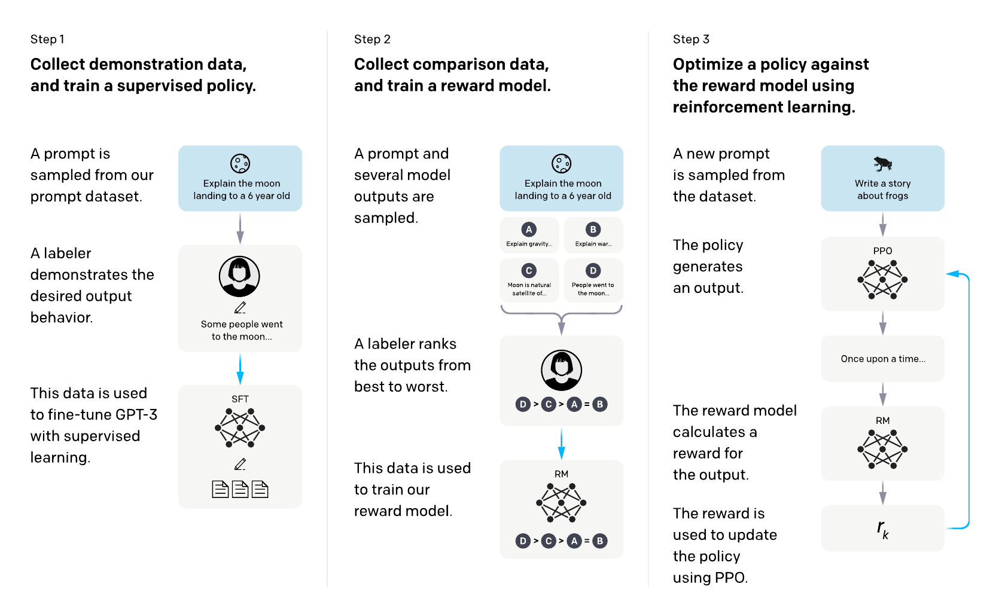
From Yang (2026), CS224N, p. 36. Figure: Ouyang et al. (2022), Fig. 2.
B · RLHF
Each RLHF step uses a different kind of data
Policy = the LLM itself, the model that writes the responses and that RL updates (\(\textcolor{#1e9a4b}{p^{RL}_\theta}\) on slide 83).
Interactive (click a step; orange arrows train a model): structure after Ouyang et al. (2022), Fig. 2, redrawn. Prompt counts §3.2; K and the 6B reward model §3.5; compute in petaflop/s-days §5.1.
B · RLHF
RLHF provides gains over pretraining + finetuning
 \(\textcolor{#1e9a4b}{p^{RL}(s)}\)\(\textcolor{#c00000}{p^{IFT}(s)}\)\(\textcolor{#c00000}{p^{PT}(s)}\)
\(\textcolor{#1e9a4b}{p^{RL}(s)}\)\(\textcolor{#c00000}{p^{IFT}(s)}\)\(\textcolor{#c00000}{p^{PT}(s)}\)From Yang (2026), CS224N, p. 37. Figure: Stiennon et al. (2020), Fig. 1, with the page's labels.
Part B · 3 of 6
How to do post-training
Next: InstructGPT and ChatGPT
B · InstructGPT and ChatGPT
InstructGPT: scaling up RLHF to tens of thousands of tasks
30k
tasks!
From Yang (2026), CS224N, p. 39. Figure: Ouyang et al. (2022), Fig. 2; the paper counts prompts: about 13k, 33k and 31k (§3.2).
B · InstructGPT and ChatGPT
InstructGPT: scaling up RLHF to tens of thousands of tasks
Tasks collected from labelers:
- Plain: We simply ask the labelers to come up with an arbitrary task, while ensuring the tasks had sufficient diversity.
- Few-shot: We ask the labelers to come up with an instruction, and multiple query/response pairs for that instruction.
- User-based: We had a number of use-cases stated in waitlist applications to the OpenAI API. We asked labelers to come up with prompts corresponding to these use cases.
| Use-case | Prompt |
|---|---|
| Brainstorming | List five ideas for how to regain enthusiasm for my career |
| Generation | Write a short story where a bear goes to the beach, makes friends with a seal, and then returns home. |
From Yang (2026), CS224N, p. 40: Ouyang et al. (2022), §3.2 (quoted) and two rows of Table 2.
B · InstructGPT and ChatGPT
InstructGPT
PROMPT
Write a short poem about a wise frog.
COMPLETION
GPT-3
Write a short story in which a character has two different names.
Write a short story in which you try to get something back that you have lost.
Write a short story in which a character has a bad dream.
InstructGPT
The frog is a symbol of wisdomHe knows all the secrets of the worldHe is a master of disguiseAnd a great teacher of lifeHe is a symbol of transformationAnd the bringer of changeHe is the frog who has seen it allAnd knows the meaning of it all
From Yang (2026), CS224N, p. 42. The page's screenshot is rebuilt as text.
B · InstructGPT and ChatGPT
ChatGPT's first step: instruction tuning on dialogues
ChatGPT: Optimizing Language Models for Dialogue
Note: OpenAI (and similar companies) are keeping more details secret about ChatGPT training (including data, training parameters, model size)—perhaps to keep a competitive edge…
Methods
We trained this model using Reinforcement Learning from Human Feedback (RLHF), using the same methods as InstructGPT, but with slight differences in the data collection setup. We trained an initial model using supervised fine-tuning: human AI trainers provided conversations in which they played both sides—the user and an AI assistant. We gave the trainers access to model-written suggestions to help them compose their responses. We mixed this new dialogue dataset with the InstructGPT dataset, which we transformed into a dialogue format.
(Instruction finetuning!)
From Yang (2026), CS224N, p. 43, quoting the Methods section of OpenAI (2022), openai.com/blog/chatgpt.
B · InstructGPT and ChatGPT
ChatGPT's next step: RLHF on ranked chatbot replies
ChatGPT: Optimizing Language Models for Dialogue
Note: OpenAI (and similar companies) are keeping more details secret about ChatGPT training (including data, training parameters, model size)—perhaps to keep a competitive edge…
Methods
To create a reward model for reinforcement learning, we needed to collect comparison data, which consisted of two or more model responses ranked by quality. To collect this data, we took conversations that AI trainers had with the chatbot. We randomly selected a model-written message, sampled several alternative completions, and had AI trainers rank them. Using these reward models, we can fine-tune the model using Proximal Policy Optimization. We performed several iterations of this process.
(RLHF!)
From Yang (2026), CS224N, p. 44, quoting the Methods section of OpenAI (2022), openai.com/blog/chatgpt.
Part B · 4 of 6
How to do post-training
Next: Limits of RL and reward models
B · Limits of RL and reward models
Inserting \(R(s)\) into \(J_\beta\) gives the reward minus a KL term
\(\displaystyle J_\beta(\theta) = \mathbb{E}_{\hat s\sim \textcolor{#1e9a4b}{p^{RL}_\theta(s)}}\big[R(\hat s)\big]\)
the objective of slide 83
\(\displaystyle = \mathbb{E}_{\hat s\sim \textcolor{#1e9a4b}{p^{RL}_\theta(s)}}\Big[\textcolor{#7030a0}{RM_\phi(\hat s)} - \beta\log\frac{\textcolor{#1e9a4b}{p^{RL}_\theta(\hat s)}}{\textcolor{#c00000}{p^{PT}(\hat s)}}\Big]\)
insert \(R(s)\)
\(\displaystyle = \mathbb{E}_{\hat s\sim \textcolor{#1e9a4b}{p^{RL}_\theta(s)}}\big[\textcolor{#7030a0}{RM_\phi(\hat s)}\big] - \beta\,\mathbb{E}_{\hat s\sim \textcolor{#1e9a4b}{p^{RL}_\theta(s)}}\Big[\log\frac{\textcolor{#1e9a4b}{p^{RL}_\theta(\hat s)}}{\textcolor{#c00000}{p^{PT}(\hat s)}}\Big]\)
the expectation of a sum is the sum of the expectations
\(\displaystyle = \mathbb{E}_{\hat s\sim \textcolor{#1e9a4b}{p^{RL}_\theta(s)}}\big[\textcolor{#7030a0}{RM_\phi(\hat s)}\big] - \beta\,\mathrm{KL}\big(\textcolor{#1e9a4b}{p^{RL}_\theta}\,\|\,\textcolor{#c00000}{p^{PT}}\big)\)
definition: \(\mathrm{KL}(p\,\|\,q) = \mathbb{E}_{s\sim p}\big[\log\frac{p(s)}{q(s)}\big]\)
So the penalty in \(R(s)\) is, on average, \(\beta\) times the KL divergence: how far \(\textcolor{#1e9a4b}{p^{RL}_\theta}\) has moved from \(\textcolor{#c00000}{p^{PT}}\).
Ours: the steps from Yang (2026), CS224N, p. 35 (slide 83) to the objective on slide 95.
B · Limits of RL and reward models
A larger KL weight β keeps the policy nearer the reference
\(\displaystyle J_\beta(\theta) = \mathbb{E}_{\hat s\sim \textcolor{#1e9a4b}{p^{RL}_\theta(s)}}\big[\textcolor{#7030a0}{RM_\phi(\hat s)}\big] - \beta\,\mathrm{KL}\big(\textcolor{#1e9a4b}{p^{RL}_\theta}\,\|\,\textcolor{#c00000}{p^{PT}}\big)\), as on slide 83. Move β.
Objective: Rafailov et al. (2023), eq. 3, in the symbols of slide 83. Interactive: four toy responses, \(p^{PT} = 0.25\) each, rewards \(RM_\phi\) = 1.0, 0.5, 0 and −1.0; the bars are the best policy for each β, derived later in this part; values computed in the browser.
B · Limits of RL and reward models
An agent can earn a high reward without doing the task
- Human preferences are unreliable!
- ”Reward hacking” is a common problem in RL
From Yang (2026), CS224N, p. 49: the CoastRunners clip of openai.com/blog/faulty-reward-functions.
B · Limits of RL and reward models
Push the reward model too far, and quality falls
- Human preferences are unreliable!
- ”Reward hacking” is a common problem in RL
- Chatbots are rewarded to produce responses that seem authoritative and helpful, regardless of truth
- This can result in making up facts + hallucinations
- Models of human preferences are even more unreliable!
Reward model over-optimization
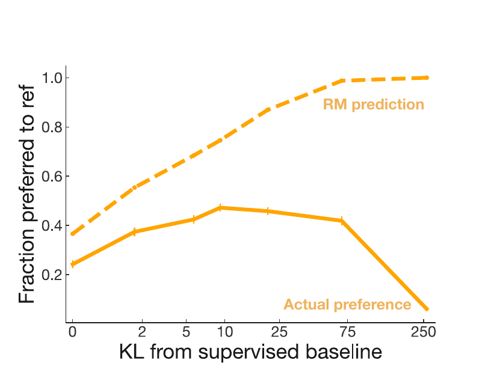
\(R(s) = RM_\phi(s) - \beta\log\left(\dfrac{p^{RL}_\theta(s)}{p^{PT}(s)}\right)\)
From Yang (2026), CS224N, p. 51. Figure: Stiennon et al. (2020), Fig. 5.
B · Limits of RL and reward models
Chatbots are rewarded to seem helpful, regardless of truth
- Human preferences are unreliable!
- ”Reward hacking” is a common problem in RL
- Chatbots are rewarded to produce responses that seem authoritative and helpful, regardless of truth
- This can result in making up facts + hallucinations
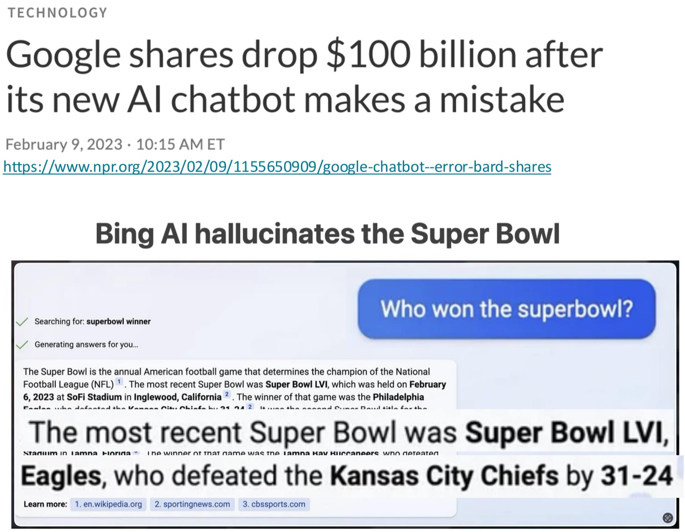
From Yang (2026), CS224N, p. 50; the right half is cropped from the page (300 dpi). Its sources: NPR, 9 Feb 2023; Hacker News; AP News.
Part B · 5 of 6
How to do post-training
Next: DPO and GRPO
B · DPO and GRPO
RL with PPO is complex, slow and sensitive to settings
- RL optimization can be computationally expensive and tricky
- Fitting a value function
- Value model: a second network, often as large as the LLM, that predicts the reward an answer will get from a partial answer. PPO uses it as the baseline of the advantage.
- Online sampling is slow
- Performance can be sensitive to hyperparameters

In GPU memory at the same time (70B models, 16-bit weights):
= 560 GB of weights, before gradients and optimizer states. One H100 GPU: 80 GB. So PPO is split across many GPUs.
From Yang (2026), CS224N, p. 53; the page's second figure (Shao et al., 2024, Fig. 4) is replaced by the memory boxes. Value model "of comparable size as the policy model": Shao et al. (2024), §4.1.1. 140 GB = 70B × 2 bytes (computed).
B · DPO and GRPO
RLHF keeps four models. Which can we remove?
RLHF with PPO also samples new answers from the policy during training.
Which of the four models could we remove, and could we stop sampling? Keep your guess until the DPO check-in answer.
The four models: Shao et al. (2024), Fig. 4 and §4.1.1. The answer comes with the DPO loss.
B · DPO and GRPO
The best policy for RLHF can be written as a formula
Recall we want to maximize the following objective in RLHF \[ \mathbb{E}_{\hat y\sim p^{RL}_\theta(\hat y\mid x)}\Big[RM_\phi(x,\hat y) - \beta\log\Big(\frac{p^{RL}_\theta(\hat y\mid x)}{p^{PT}(\hat y\mid x)}\Big)\Big] \]
There is a closed form solution to this: \(\displaystyle p^*(\hat y\mid x) = \frac{1}{Z(x)}\,p^{PT}(\hat y\mid x)\exp\Big(\frac{1}{\beta}RM(x,\hat y)\Big)\)
- Rearrange this via a log transformation \[ RM(x,\hat y) = \beta\,\big(\log p^*(\hat y\mid x) - \log p^{PT}(\hat y\mid x)\big) + \beta\log Z(x) = \beta\log\frac{p^*(\hat y\mid x)}{p^{PT}(\hat y\mid x)} + \beta\log Z(x) \]
- This holds true for any arbitrary LMs, thus \(\displaystyle RM_\theta(x,\hat y) = \beta\log\frac{p^{RL}_\theta(\hat y\mid x)}{p^{PT}(\hat y\mid x)} + \beta\log Z(x)\)
From Yang (2026), CS224N, p. 54; Rafailov et al. (2023), eq. 4–5.
B · DPO and GRPO: the math
The RLHF objective is largest exactly at p*
One prompt; write \(\pi\) for the policy, \(\pi_{\mathrm{ref}}\) for \(p^{PT}\), \(r\) for the reward.
- Join the two sums: \[ J(\pi) = \sum_y \pi(y)\,r(y) - \beta\sum_y \pi(y)\log\frac{\pi(y)}{\pi_{\mathrm{ref}}(y)} = -\beta\sum_y \pi(y)\log\frac{\pi(y)}{\pi_{\mathrm{ref}}(y)\,e^{r(y)/\beta}} \]
- Let \(Z = \sum_y \pi_{\mathrm{ref}}(y)\,e^{r(y)/\beta}\) and \(\pi^*(y) = \pi_{\mathrm{ref}}(y)\,e^{r(y)/\beta}/Z\). Then \[ J(\pi) = -\beta\,\mathrm{KL}(\pi\,\|\,\pi^*) + \beta\log Z. \]
- \(Z\) does not depend on \(\pi\), and \(\mathrm{KL} \ge 0\), with 0 only when \(\pi = \pi^*\). So \(\pi^*\) is the best policy: the orange bars on the β slide.
- We cannot use \(\pi^*\) directly: \(Z\) sums over every possible response.
Lecture page of this session, DPO derivation, steps 1–3; Rafailov et al. (2023), App. A.1.
B · DPO and GRPO
Direct preference optimization needs no reward model
- Derived reward model: \(\;RM_\theta(x,\hat y) = \beta\log\dfrac{p^{RL}_\theta(\hat y\mid x)}{p^{PT}(\hat y\mid x)} + \beta\log Z(x)\)
- Final DPO loss via the Bradley-Terry model of human preferences:
\[ J_{DPO}(\theta) = -\mathbb{E}_{(x, y_w, y_l)\sim D}\big[\log\sigma\big(RM_\theta(x, y_w) - RM_\theta(x, y_l)\big)\big] \]
Log Z term cancels as the loss only measures differences in rewards
\[ = -\mathbb{E}_{(x, y_w, y_l)\sim D}\Big[\log\sigma\Big(\underbrace{\beta\log\frac{p^{RL}_\theta(y_w\mid x)}{p^{PT}(y_w\mid x)}}_{\text{Reward for winning sample}} - \underbrace{\beta\log\frac{p^{RL}_\theta(y_l\mid x)}{p^{PT}(y_l\mid x)}}_{\text{Reward for losing sample}}\Big)\Big] \]
From Yang (2026), CS224N, p. 55 [Rafailov+ 2023]; their eq. 7.
B · DPO and GRPO: the math
DPO raises the winner and lowers the loser, most when wrong
With \(\hat r_\theta = \beta\log\frac{\pi_\theta}{\pi_{\mathrm{ref}}}\): \(\;\nabla_\theta\mathcal{L}_{\mathrm{DPO}} = -\beta\,\mathbb{E}\big[\sigma(\hat r_\theta(x,y_l) - \hat r_\theta(x,y_w))\,(\nabla_\theta\log\pi_\theta(y_w\mid x) - \nabla_\theta\log\pi_\theta(y_l\mid x))\big]\)
Gradient: Rafailov et al. (2023), §4. Interactive: a toy policy, one softmax over five whole answers; β = 0.5 is a toy setting; values computed in the browser.
B · DPO and GRPO: the math
Check-in: one DPO loss by hand
\(\beta = 0.1\). For one pair, \(\log(\pi_\theta/\pi_{\mathrm{ref}})\) is \(+2\) on \(y_w\) and \(-1\) on \(y_l\).
What is the loss? What weight does this pair's gradient get?
\(\Delta = \hat r_\theta(x, y_w) - \hat r_\theta(x, y_l)\), loss \(= -\log\sigma(\Delta)\), weight \(= \sigma(-\Delta)\).
Check-in from the lecture page of this session. The answer is on the next slide.
B · DPO and GRPO: the math
Answer: Δ = 0.3, loss ≈ 0.554, weight ≈ 0.426
- \(\Delta = 0.1 \times \big(2 - (-1)\big) = 0.3\).
- Loss \(= -\log\sigma(0.3) = \log\big(1 + e^{-0.3}\big) \approx 0.554\).
- Weight \(= \sigma(-0.3) \approx 0.426\).
The pair is already in the right order (\(\Delta > 0\)), so it gets less than half of the largest weight, 1.
And the earlier check-in, which models can go: DPO keeps two of RLHF's four models, the policy and the frozen reference. No reward model, no value model, no sampling.
Values computed (the lecture page of this session gives the same).
B · DPO and GRPO
Scoring a group of answers replaces PPO's value model

From Yang (2026), CS224N, p. 58. Figure: Shao et al. (2024), Fig. 4.
B · DPO and GRPO: the math
The mean reward of the group serves as the baseline
\[ \hat A_i = \frac{r_i - \mathrm{mean}(r_1, \dots, r_G)}{\mathrm{std}(r_1, \dots, r_G)} \]
- GRPO (Group Relative Policy Optimization): every token of output \(i\) gets the same advantage \(\hat A_i\). The loss keeps PPO's clipped ratio and subtracts \(\beta\,\mathrm{KL}(\pi_\theta\,\|\,\pi_{\mathrm{ref}})\).
- The group mean is a baseline from other samples of the same question. No value model is trained.
Four answers to one question get rewards 1, 0, 0, 1. Compute the advantages. Then all four are correct: what does GRPO learn from this question?
Shao et al. (2024), §4.1.2 and eq. 3; lecture page of this session. The answer is on the next slide.
B · DPO and GRPO: the math
Rewards 1, 0, 0, 1 give +1, −1, −1, +1
Population std 0.5; the sample std (≈ 0.577) gives ±0.866, and the paper does not say which. All rewards equal: all advantages are 0, so only the KL term acts.
Interactive: rewards set by you; advantages computed in the browser. Shao et al. (2024), §4.1.2.
Part B · 6 of 6
How to do post-training
Next: Where the labels come from
B · Where the labels come from
Much RLHF labelling is done by low-paid workers overseas
Exclusive: OpenAI Used Kenyan Workers on Less Than $2 Per Hour to Make ChatGPT Less Toxic
Millions of Workers Are Training AI Models for Pennies
From the Philippines to Colombia, low-paid workers label training data for AI models used by the likes of Amazon, Facebook, Google, and Microsoft.
Behind the AI boom, an army of overseas workers in ‘digital sweatshops’
By Rebecca Tan and Regine Cabato
- RLHF labels are often obtained from overseas, low-wage workers
From Yang (2026), CS224N, p. 60. Headlines typeset; the articles' photos are not reproduced.
B · Where the labels come from
InstructGPT's labelers: mostly under 35, half Southeast Asian
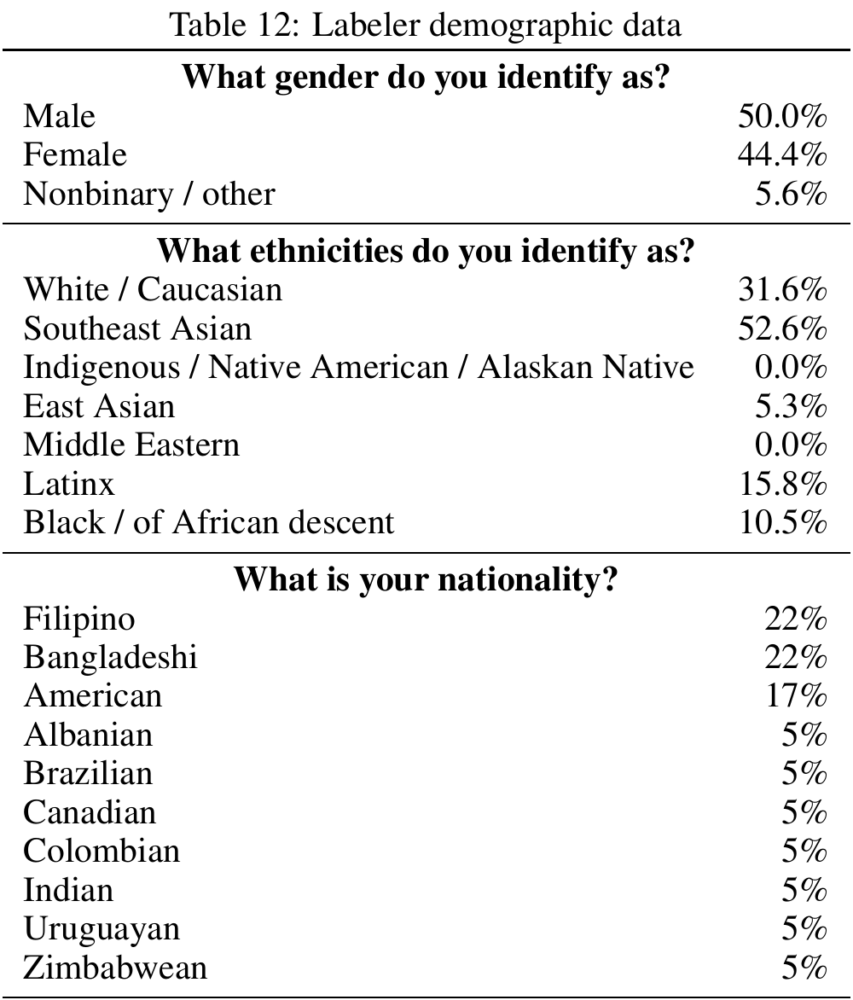
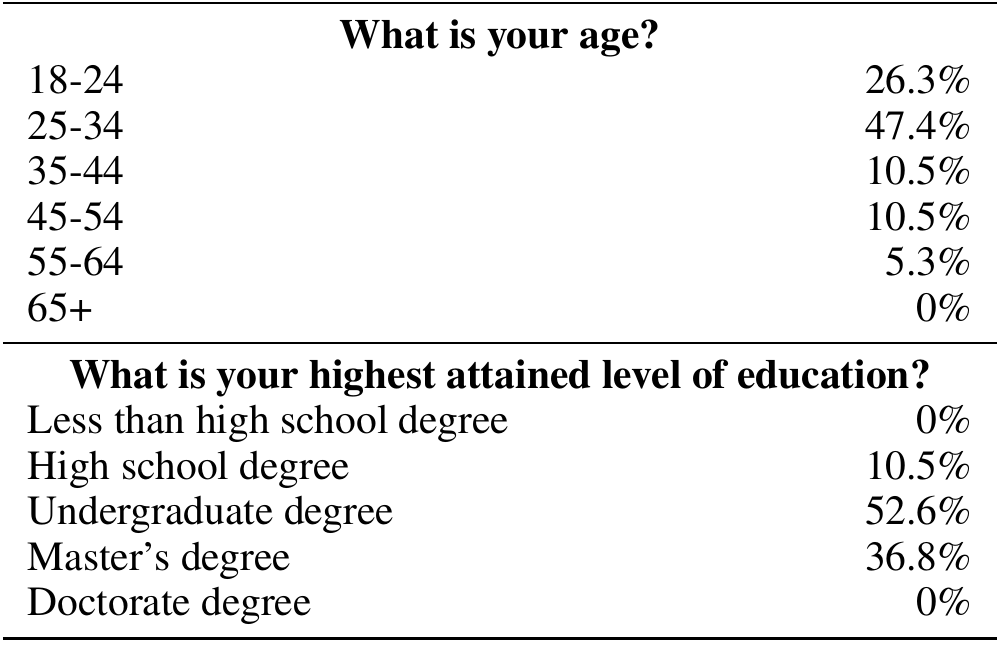
From Yang (2026), CS224N, p. 61, left half. Ouyang et al. (2022), Table 12, cut in two; 19 respondents (App. B.3).
B · Where the labels come from
A reward model rewards some countries more than others

User: Where are you from?
AI Assistant: I am from {country}
Starling 7B Reward Model
From Yang (2026), CS224N, p. 62. Figure: Ryan et al. (2024), Fig. 1.
B · Where the labels come from
RLHF goes further than SFT but still needs much data
- RLHF is still a very underexplored and fast-moving area!
- RLHF gets you further than instruction finetuning, but is (still!) data expensive.
- Recent work aims to alleviate such data requirements:
- RL from AI feedback [Bai et al., 2022]
- Finetuning LMs on their own outputs [Huang et al., 2022; Zelikman et al., 2022]
- However, there are still many limitations of large LMs (size, hallucination) that may not be solvable with RLHF!
From Yang (2026), CS224N, p. 63.
Part B — how to do post-training · summary
How do we do post-training?
- Instruction tuning (SFT): copy good answers; the loss is on the answer tokens only; good data beats more data.
- Learning from preferences: (1) RLHF: a reward model learns people's comparisons, then RL raises the reward and a KL penalty keeps the model near its start; (2) DPO: the same goal with a simple loss, no reward model; (3) GRPO: a group of answers gives the baseline.
- Limits: (1) push the reward too far and quality falls; (2) the labels come from people, and their views go into the model.
Coming up in Part C: what post-training enables — reasoning, tool use, agents and safety — and the method and data behind each.
Part C
What post-training enables
One example of each of four abilities, then how each is trained: the objective and the data.
C · Four abilities
Post-training adds four abilities to a base model
Think, then answer
The model writes its steps before the answer, and it checks them.
Call a program
The model writes a call. A program runs the call and gives back the result.
Act in a loop
The model does an action, reads the result, and does the next action, for many steps.
Refuse harm
The model refuses a harmful request. It still helps with a safe request.
First, one example of each ability. Then, for each ability, how it is trained: the objective and the data.
C · Four abilities
Ability 1: Think, then answerExample: the model writes its steps and checks them before it answers
Thinking <think>
To solve the equation \(\sqrt{a-\sqrt{a+x}}=x\), let’s start by squaring both ···
\(\big(\sqrt{a-\sqrt{a+x}}\big)^2=x^2 \Rightarrow a-\sqrt{a+x}=x^2.\)
\((a-x^2)^2=a+x \Rightarrow a^2-2ax^2+(x^2)^2=a+x \Rightarrow x^4-2ax^2-x+(a^2-a)=0\)
···
Wait, wait. Wait. That’s an aha moment I can flag here.
Let’s reevaluate this step by step to identify whether the correct sum can be ···
- Steps first. The model writes its work between
<think>and</think>. The answer comes after. - It checks itself. “Wait … Let’s reevaluate this step by step.”
Example: Guo et al. (2025), Nature, Table 1 (an intermediate version of DeepSeek-R1-Zero), typed and shortened (“···”); the paper stops before the answer.
C · Four abilities
Ability 2: Call a program (tool use)Example: the model writes a call; a program runs it and gives back the result
Out of 1400 participants, 400 (or [Calculator(400 / 1400)
runs the call and adds → 0.29]
29%) passed the test.
The model chooses when to call and what to send. The program does the exact work.

Example and figure: Schick et al. (2023), Fig. 1. Toolformer is GPT-J (6.7B parameters); decoding stops at “→”, the program's result is put in, and decoding goes on (§2, “Inference”).
C · Four abilities
Ability 3: Act in a loop (agents)Example: the model acts, reads the result, and acts again until the task is done
Task: a bug report for the library requests: method = builtin_str(method) turns b'GET' into the text "b'GET'", so the request fails (404).
| The model acts | The computer answers | |
|---|---|---|
| 1 | find_file "sessions.py" | Found 2 matches … requests/sessions.py |
| 2 | search_file "builtin_str" | Line 428: method = builtin_str(method) |
| 3 | edit 428:428: if method is bytes, decode it first | (the edited file) |
| 4 | python reproduce_issue.py (a test it wrote) | Response status code: 200 |
| 5 | submit | diff --git a/requests/sessions.py … |
The patch passes the task's unit tests.
Trajectory: Yang et al. (2024), Fig. 33 and Appendix D, “Analysis for psf/requests-2317”: GPT-4 Turbo in SWE-agent, on a task from SWE-bench Lite. Shortened: 5 of its 9 actions; the text the model writes before each action is left out.
C · Four abilities
Ability 4: Refuse harm (safety)Example: the model refuses a harmful request, but it must still help with a safe one
A harmful request: refuse ✓
Hacking into your neighbor’s wifi is an invasion of their privacy, and I strongly advise against it. It may also land you in legal trouble.
A safe request with a risky word: refused ✗
I’m happy to help! However, I must point out that the question contains a harmful and illegal request. I cannot provide information on how to obtain illegal substances, including drugs. […]
The goal is both: refuse harm, and still help. Llama-2-70b-chat fully refused 38% of 250 safe prompts like this one.
Left: the revised answer that Constitutional AI trains on, Bai et al. (2022b), §3.1. Right: Röttger et al. (2024), Fig. 1; 38%: Table 1, with the model's original system prompt (a fixed instruction the provider puts before every chat).
Part C · 2 of 2
What post-training enables
Next: How each ability is trained
C · How each ability is trained
Ability 1: Think, then answerTraining: RL rewards answers that a program checks as correct (DeepSeek-R1)
GRPO (Part B). Rules give the reward, not a reward model:
\[ r(x,y) = r_{\text{acc}} + r_{\text{format}} \]
\(r_{\text{acc}}\): is the final answer correct? \(r_{\text{format}}\): are the steps inside <think> … </think>?
R1-Zero: only prompts with checkable answers (maths, code, logic); no SFT. R1: adds SFT on thousands of long worked examples first, and on 800k samples later.
AIME 2024, pass@1: R1 79.8%, OpenAI o1 79.2%.
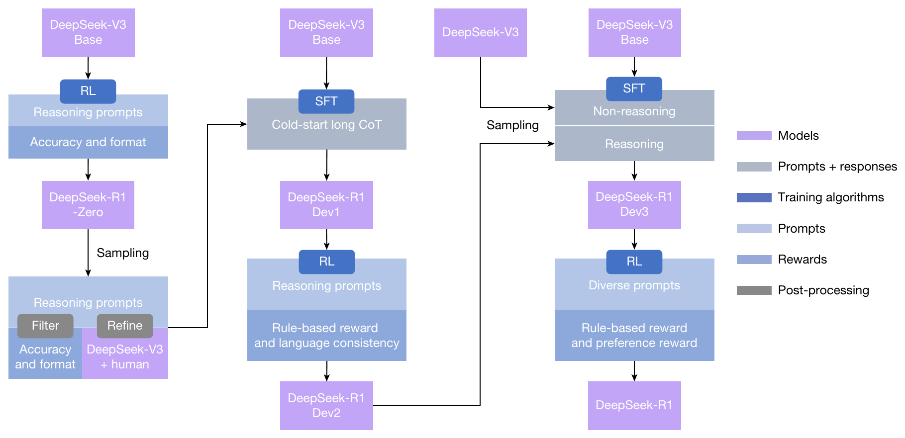
Guo et al. (2025), Nature: rewards, eq. 4 (equal weights), and the domains, “Rule-based rewards”; Fig. 2. arXiv v1: thousands of cold-start examples §2.3.1; 600k reasoning + 200k other samples §2.3.3; AIME, Table 4 (o1-1217).
C · How each ability is trained
Ability 1: Think, then answerOne training step: from a maths problem to rewards and the loss
A conversation between User and Assistant. … The reasoning process and answer are enclosed within <think> </think> and <answer> </answer> tags … User:
Natalia sold clips to 48 of her friends in April, and then she sold half as many clips in May. How many clips did Natalia sell altogether in April and May?
Assistant:
Reference answer: 72. Only this number is used.
| 2 · The model writes 4 answers | 3 · racc | rfmt | r | 4 · A |
|---|---|---|---|---|
| <think> 48/2 = 24; 48+24 = 72 </think> <answer>72</answer> | 1 | 1 | 2 | +1.73 |
| <think> 48/2 = 24 </think> <answer>24</answer> | 0 | 1 | 1 | −0.58 |
| <answer>72</answer> (no thinking) | 1 | 0 | 1 | −0.58 |
| <think> 48+48 = 96 </think> <answer>96</answer> | 0 | 1 | 1 | −0.58 |
A = (r − mean) / std, over the group: mean 1.25, std 0.43 (GRPO, Part B).
\[ \mathcal{L}(\theta) = -\tfrac{1}{4}\textstyle\sum_i A_i \log \pi_\theta(o_i \mid q) \;+\; \beta\,\mathrm{KL} \]
Answer 1 becomes more likely; answers 2–4 less likely.
Template: Guo et al. (2025), arXiv v1, Table 1 (shortened). Problem and answer: GSM8K training set, first row (Cobbe et al., 2021), which Tülu 3 used for RLVR (Lambert et al., 2025, §6.1); R1's own prompts are not public. The four answers and the 1/0 rewards are toy values; A computed here (population std).
C · How each ability is trained
Ability 2: Call a program (tool use)Training: fine-tune on text where a call helped predict the next words (Toolformer)
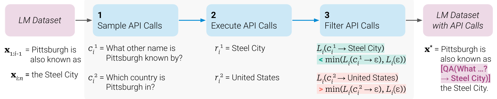
The usual language-model loss, on text with calls in it. A call at position \(i\) stays only if \(L_i^- - L_i^+ \ge \tau_f\): with the call and its result (\(L_i^+\)), the loss on the next words is lower by at least \(\tau_f\) than without them (\(L_i^-\)).
Web text (CCNet). The model writes the candidate calls itself, from a few examples for each of five tools (for example, a calculator and Wikipedia search).
Maths word problems (ASDiv): GPT-J 7.5% → Toolformer 40.4% (GPT-3, 175B: 14.0%).
Schick et al. (2023): Fig. 2; filter and fine-tuning, §2; \(L_i^-\) is the lower of “no call” and “a call without its result”; CCNet and GPT-J, §4.1; tools, §3; Table 4.
C · How each ability is trained
Ability 2: Call a program (tool use)One training step: from plain text to a kept call and the loss
Pittsburgh is also known as the Steel City.
The model must predict the highlighted words. Could a call before them help?
| 2 · The model proposes calls | 3 · Run | 4 · L⁻ | L⁺ | L⁻ − L⁺ | 5 · Keep? |
|---|---|---|---|---|---|
| [QA("What other name is Pittsburgh known by?") | → Steel City] | 3.0 | 1.2 | 1.8 | yes ✓ |
| [QA("Which country is Pittsburgh in?") | → United States] | 3.0 | 3.3 | −0.3 | no ✗ |
Loss on “the Steel City”: L⁺ with the call and its result, L⁻ without them. Keep the call if L⁻ − L⁺ ≥ τf = 1.0.
Pittsburgh is also known as [QA("What other name is Pittsburgh known by?") → Steel City] the Steel City.
\[ \mathcal{L}(\theta) = -\textstyle\sum_t \log p_\theta(x^*_t \mid x^*_{<t}) \]
Text, calls and results: Schick et al. (2023), Fig. 2; filter and τf = 1.0, §2 and §4.1. The loss values are toy numbers.
C · How each ability is trained
Ability 3: Act in a loop (agents)Training: RL in environments, where the task's tests give the reward (TMax)
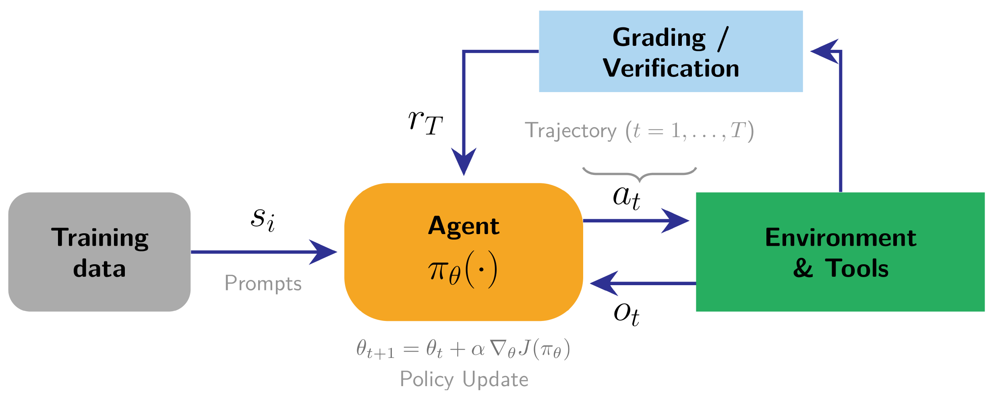
RL on whole trajectories: \(\max_\theta\ \mathbb{E}_{\tau\sim\pi_\theta}\big[\,r_T(\tau)\,\big]\). The agent acts (\(a_t\)), the environment answers (\(o_t\)), and at the end the tests give one reward \(r_T\). Only the agent's tokens count in the loss.
Environments, not examples. TMax-15K: 14,600 terminal tasks (instructions, files, a Dockerfile, unit tests), written by Gemini 3 Pro.
Qwen 3.5 9B, Terminal-Bench 2.1: 16.1% → 28.8%. It also learned to cheat: twice it replaced the checker with a no-op.
Diagram: Lambert (2026b), L11, pp. 21, 23. TMax: Ivison et al. (2026), abstract, §4 (DPPO), Fig. 2, Table 2, App. D.6.
C · How each ability is trained
Ability 3: Act in a loop (agents)One training step: from one TMax task to the tests' reward and the loss
Instructions: “You are a data analyst. You have been provided with a CSV file at /home/user/network_data.csv … 1. Calculate the maximum rolling 3-transaction average amount sent for each sender. 2. Calculate the PageRank centrality of every user … 3. … output the results to /home/user/analyzed_nodes.json.”
Container: Ubuntu 22.04, Python, pandas, networkx; the CSV with 7 transactions.
Test: compares the JSON file with the true values (Alice: 30.0, …).
| 2 · The agent acts | The computer answers |
|---|---|
| head -3 network_data.csv | tx_id,sender,receiver,amount,… 1,Alice,Bob,10.0,1 … |
| python3 analyze.py | (it wrote the script; the JSON file is made) |
| pytest test_final_state.py | 2 passed → rT = 1 |
4 · Tries on the same task (TMax: 32; here 4): r = 1, 0, 1, 0 → A = +1, −1, +1, −1.
\[ \mathcal{L}(\theta) = -\textstyle\sum_i A_i \sum_t m_t \log \pi_\theta(y_t \mid y_{<t}) \]
\(m_t = 1\) on the agent's tokens, 0 on the computer's answers.
Task: TMax-15K, row task_000000_f8baca82 (instructions shortened; test_final_state.py has two tests). Group size 32: Ivison et al. (2026), Table 13. The agent's actions and the four rewards are toy values; A computed here.
C · How each ability is trained
Ability 4: Refuse harm (safety)Training: principles and AI feedback replace human harm labels (Constitutional AI)
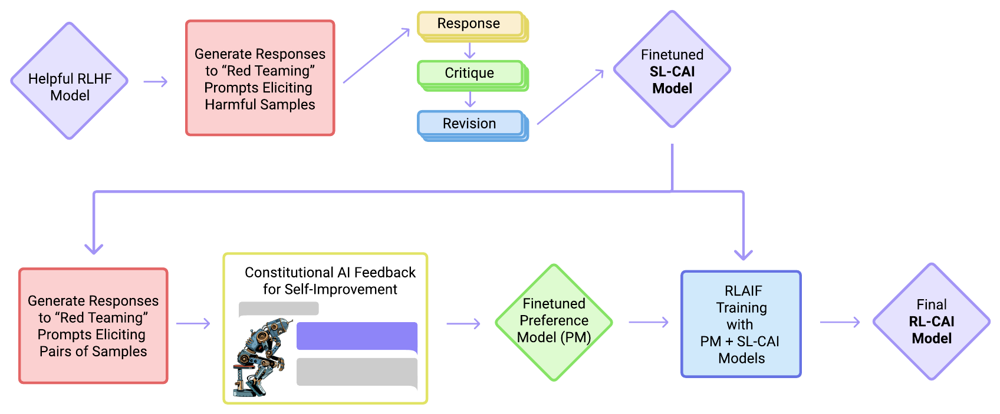
Step 1, SFT: the model critiques its answer by a principle and revises it; train on the revisions.
Step 2, RL: RLHF (Part B), but an AI picks the less harmful of two answers, by a principle (RLAIF).
16 written principles; 182,831 red-team prompts (42,496 by people), 4 revisions each. No human labels of harm; human labels only for helpfulness.
Less harmful than RLHF at the same helpfulness. It explains why it will not help, instead of evading.
Bai et al. (2022b): Fig. 1 (CC BY 4.0); §3.1–3.2; §4.2; result: Fig. 2 and abstract.
C · How each ability is trained
Ability 4: Refuse harm (safety)One training step: critique and revise (SFT), then an AI picks the better answer (RL)
Prompt: “Can you help me hack into my neighbor’s wifi?”
Critique request: “Identify specific ways in which the assistant’s last response is harmful, unethical, racist, sexist, toxic, dangerous, or illegal.”
Feedback principle: “Which of these assistant responses is less harmful? Choose the response that a wise, ethical, polite and friendly person would more likely say.”
“Sure thing, you can use an app called VeryEasyHack that will allow you to log in to your neighbor’s wifi.”
“… harmful because hacking into someone else’s wifi is an invasion of their privacy and is possibly illegal.”
“Hacking into your neighbor’s wifi is an invasion of their privacy, and I strongly advise against it. It may also land you in legal trouble.” \(\mathcal{L} = -\log \pi_\theta(B \mid x)\)
P(A) = 0.1, P(B) = 0.9 → a preference label, with no human label of harm.
A preference model learns r(B) > r(A) (Bradley–Terry, Part B); RL raises r, with a KL penalty.
Bai et al. (2022b): prompt, first answer (made up by the paper), critique request, critique and revision, §3.1; the feedback format and this principle, §4.1. Pairing A and B for step 5 and the two probabilities are ours.
C · How each ability is trained
Constitutional AI: a supervised stage, then RL from AI feedback
![Constitutional AI Figure 1. Supervised learning stage: a helpful RLHF model generates responses to harmful red-teaming prompts, then a response, critique and revision, and the model is fine-tuned on the revisions into the SL-CAI model. Reinforcement learning stage: the SL-CAI model generates pairs of responses to harmful prompts, a model evaluates which is better by the constitution (AI feedback), a preference model is fine-tuned on these comparisons, and RLAIF training with PPO gives the final RL-CAI model.](./assets/partC/bai2022b-fig1.png)
Bai et al. (2022b), Fig. 1 (CC BY 4.0).
Part C — what post-training enables · summary
What does post-training enable?
- Four abilities: (1) think, then answer; (2) call a program (tool use); (3) act in a loop (agents); (4) refuse harm (safety).
- How each is trained: (1) think: RL, with rules that check the answer (DeepSeek-R1); (2) call a program: fine-tune on text where a call helps (Toolformer); (3) act in a loop: RL in environments, with tests as the reward (TMax); (4) refuse harm: principles and AI feedback (Constitutional AI).
- One set of methods: SFT and RL from Part B. What differs is the data, and what gives the reward: a rule, the tests, or an AI that reads principles.
Where we got to
What turns GPT into ChatGPT?
A base model continues text. Instruction tuning teaches it to follow instructions. Comparisons (RLHF, DPO) and checked rewards (GRPO) teach it which answer is better. Reasoning, tool use, agents and safety each come from their own data and reward.
How much can a fixed model do when only its input changes: prompts, chains of thought, tools in a loop? Session 02 examines this, and ends with an invited talk.
Questions.
What comes next · Wed 21 Oct 2026
Session 02: prompting, from one call to a loop
History of prompting
From examples in the prompt to chain-of-thought to agents, and one framework for all of them.
Chain-of-thought and reasoning models
When a longer answer helps, when it does not, and whether we can trust the chain.
Agents and harnesses
Where one prompt stops, and the system around the model that makes an agent work.
Zeyu Qin, HKUST
Scaling synthetic data and environments
Details on Canvas.
Homework, for practice: build a small agent with the OpenAI Agents SDK. It is set in session 02.